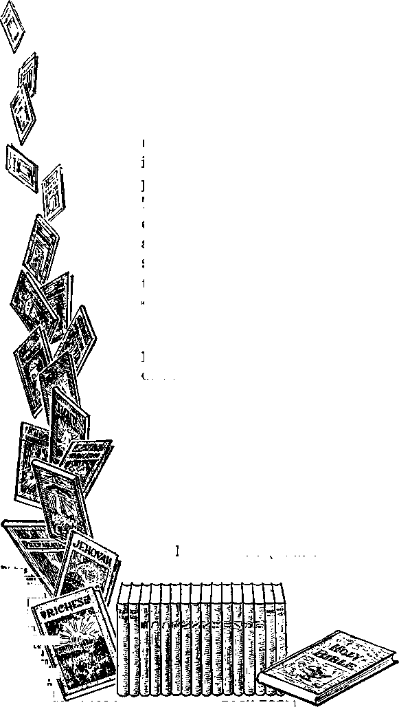

A JOURNAL OF FACT HOPE AND COURAGE

IllillllllllllllllllllllllllllllllllllUlllllillllllllllllllllllllllllllllllllll
in this issue
JUSTICE EVICTED FROM PENNSYLVANIA
CATHOLIC ACTION NOW AND PREVIOUSLY
KINGDOM PUBLISHERS IN MANY LANDS
FLAG SALUTING
PIONEERING IN SPAIN
PURGATORY AND THE BIBLE
iiiiiimiiiiiiiiiiiiiiiiiiiiiiiimiiiiiiiiiiiiimiiiiiiiiiiiiiiiiiiiiiiiiiiii
every other
WEDNESDAY
five cents a copy one dollar a year Canada & Foreign 1.25
Vol. XVIII-No. 447 November 4, 1936
■ ■■ ■■■ ■ ■ I !■ '■ '■ I ■
CONTENTS
..CXG),
.(2xo..
Justice Evicted from Pennsylvania 67 Mayor of New Orleans Uses His Head 68 Wheaton Not a “Distinctly
Christian City” 69
Web of the Black Spider 69
National Independence Day 69
“When Saw We Thee in Prison?” 70
Men Who Court Annihilation 71
Betrayals of Witnesses in Germany 71
Le Roy Run by Priests 71
Catholic Action Now
and Previously 72
Just Mere Accidents, of Course 72 How Cross Superstition Originated 72 Other Absurd Superstitions 72 Just a Little Bit Too Anxious 73 Safety First—Do It Now! 74
Confusing to Heavenly Dressmakers 74
A Surmise That Is Correct 74 Black Legion Not So Clever 75 Who’s Behind the Black Legion? 75 Religious Polecats 76
More About Denver Orphanage 76 ‘ ‘ Purgatory ’ ’ Teachings
Lectures of Alessandro Gavazzi 77
Allege All German Witnesses
Kingdom Publishers in Many Lands 79
The “Lightbearer” in Singapore 79 A Pioneer in the Philippines 79 The Miracle of February 24
“ In a Land of Religious Freedom ’ ’ SO
Supplementary Chronology of
Heart-rending Letters
Kingdom Publishers in New Jersey 87
A Glance at Some Unselfish Ones
‘Preservation,’ ‘Life,’ ‘Jehovah’
An Interview in the Granite State 89
When a Doubtful Policy Succeeded 89
Kingdom Publishers in the West 90
Exchanges for the Bread of Life 90
What Merced Did to God’s Children 90
From a Cherokee Jonadab 90
Coincidences on a Steamship 90
“Justified Freely by His Grace” 93
“Beaten with Many Stripes” 94
The Food-Poisoning at Manchester 95
• • <sxq) • ■ ■ — ■ ■---—---—————— ......-....— • • •
Published every other Wednesday by
GOLDEN AGE PUBLISHING COMPANY, INC.
117 Adams Street, Brooklyn, N. Y., U.S.A.
Clayton J. Woodworth President Nathan H. Knorr Vice President
Charles E. Wagner Secretary and Treasurer
FIVE CENTS A COPY
$1 a year, United States; $1.25 to Canada and all other countries.
Notice to Subscribers
Remittances : For your own safety, remit by postal or express money order. When coin or currency is lost in the ordinary mails, there is no redress. Remittances from countries other than those named below may be made to the Brooklyn office, but only by international postal money order.
Receipt of a new or renewal subscription will be acknowledged only when requested. Notice of expiration is sent with the journal one month before subscription expires. Please renew promptly to avoid loss of copies.
Send change of address direct to us rather than to the post office. Your request should reach us at least two weeks before the date of issue with which it is to take effect. Send your old as well as the new address. Copies will not be forwarded by the post office to your new address unless extra postage is provided by you.
Published also in Bohemian, Danish, Dutch, Finnish, French. German, Greek, Japanese, Norwegian, Polish, Spanish, Swedish.
British Canadian Australasian South African
Entered as second-class
Offices for Other Countries
34 Craven Terrace, London, W. 2, England
40 Irwin Avenue, Toronto 5. Ontario, Canada
7 Beresford Road, Strathfield, N. S. W., Australia Boston House, Cape Town, South Africa matter at Brooklyn, N. Y., under the Act of March 3, 1879.
Volume XVIII Brooklyn, N.Y., Wednesday, November 4, 1936 Number 447
Justice Evicted from Pennsylvania
MADAME JUSTICE has been told there is no place for her in Pennsylvania. She might just as well pack up her baggage and go somewhere else, say to Patagonia, or to the south pole. The Roman Catholic Hierarchy is taking over the Quaker State and there isn’t room for both. This eviction is with full consent and approval of the governor, George H. Earle. Governors are politicians who are interested in getting and retaining office. They would rather hold their job than to stand up courageously for truth, justice and righteousness.
The refugee
The Roman Catholic Inquisition, with its “pontifical inquisitors” and its barbarous cruelties, is functioning well in Pennsylvania. During the past year 444 of Jehovah’s witnesses in the state were arrested and jailed under one pretext or another. They have been assaulted and beaten by mobs at the instigation of Catholic priests. Mayors, police and magistrates have violated their oaths of office to join in the unprincipled campaign. A few samples of what the inquisition has done are here set forth.
Monessen. Arrested 146 Christian people at one sitting. Crowded them into indescribably filthy prison cells. Sentenced them all without trial. Padlocked a private school. Held the teacher in jail two days without charge. Encouraged mob action. Threw a brick through the private school window with a warning to get out of town. Arrested and gave heavy sentences to thirty-five others of Jehovah’s witnesses. The mayor, James C. Gold, and the police chief, Joseph Lescanec, have acted as chief “pontifical inquisitors” for the Hierarchy and have done well at the job.
Millsboro. Beat up, choked, kicked, and struck five of Jehovah’s 'witnesses; insulted their wives; ransacked their autos, and stole contents and destroyed same. Leader and chief “pontifical inquisitor” was one Jim Adah. Jim says he “doesn’t give a damn who knows that he is the leader”. Warrant is out for his arrest, but officers are unable to find him in this town of several hundred people.
Note the difference in the manner of making arrests in this Fascist-ridden state. When the Roman Catholic Hierarchy desires action against Jehovah’s witnesses, the police, mayors, and magistrates act with alacrity. Without any proof of violation of law the police are sent forth and arrests are made in wholesale lots. But when Jehovah’s witnesses complain and present proofs of actual assaults and mob action against them, the officials become paralyzed. They are as full of excuses as their jails are full of bedbugs. They haven’t the time, and they haven’t the men, is the wail they give. New Philadelphia. This town is burdened
with a parasitic growth in the shape of two Catholic churches whose priests rule in medieval style. Chief Burgess says the police take their orders from the priests. The priests said they didn’t want Jehovah’s witnesses in town; the police and the people should run them out. Accordingly a mob attacked, assaulted, and beat up Jehovah’s witnesses, destroyed literature, damaged cars, and caused 44 to be thrown into prison. None of the mob were arrested, but seven of Jehovah’s witnesses were charged with disorderly conduct and fined five dollars each. The magistrate guilty of this astounding piece of judicial malfeasance is a businessman by the name of Clarence Walters, who apparently takes his orders from the town’s ecclesiastical rulers.
Belle Vernon, North Belle Vernon, Mauch Chunk, Locust Gap, Alden, Bloomsburg, Brookville, Brownsville, Norwood, Greencastle, West Hazelton, Lehighton, Coatesville, Scranton, McAdoo, Washington, and a number of other Pennsylvania municipalities have joined the Inquisition, turning their police and judicial offices to use as “pontifical inquisitors” for the Hierarchy.
Complaint of these matters has been repeatedly made to the governor, George H. Earle. Demand has been made that he take action in the interests of justice and of preservation of the liberties of the people. Recommendation has been made to him of certain specific action that he could take, to wit: That he conduct a searching investigation with open hearings thereon, in order that those responsible for the unlawful actions of officials and mobs may be brought to light; that he instruct prosecuting officials of the counties affected to prosecute those having part in violations of the law; that he cause to be removed from office those who prostitute their positions to the dictates of religious leaders; and that he recommend to the legislative body of the state such legislation as may be necessary and proper to prevent further unlawful acts of such nature.
Governor Earle would like to keep out of the picture. He has politely declined to take any steps, and says that any action by him “would be unwarranted, and a reflection upon the integrity of our judiciary”.
This means that the governor has opened the door wide for the Roman Catholic Hierarchy to proceed with its Inquisition and do as it sees fit. The governor, in effect, says: ‘Go right ahead. There will not be any interference from this office. You may assault and browbeat Christians all you desire. You may destroy their property. You may throw them into vermin-infested jails from one end of the state to the other without regard to law or justice. You may deny any or all of their fundamental rights. You may obey the mandates of the priests in such manner as you see fit. I cannot reflect upon the integrity of our courts by saying anything or doing anything about it. Go as far as you like. And, of course, don’t forget my co-operation when election comes again.’
It’s a good thing for William Penn that he does not live in the Commonwealth of Pennsylvania in this year 1936.
WHEN the mayor of a large city uses his head for something besides a resting place for a hat, that is noticeable. When such mayor uses ordinary intelligence on the right of Jehovah’s witnesses to preach the gospel without interference, that is real news, remarkable news.
Therefore The Golden Age calls to your attention an act of the mayor of New Orleans.
New Orleans has a canvassing ordinance, like Hoboken, Nutley, Orange, Irvington and other Hierarchy-controlled cities of New Jersey.
The police of New Orleans started arresting Jehovah’s witnesses under said canvassing ordinance. The matter was presented to the mayor.
The work of Jehovah’s witnesses and their right to preach the gospel was fully explained. The mayor, Robert S. Maestri, sent word to the superintendent of police that the ordinance did not apply to the work of Jehovah’s witnesses.
We congratulate Mayor Maestri on having common sense, and on having the courage to use it. We recommend his act as an example to the mayors of 28 New Jersey cities, although we doubt if they have either common sense enough or courage enough to follow his lead.
Anyway, we’re glad to report that there is at least one mayor in America who does not wear the pope’s collar.
<<TTTHEATON has always been a distinctly
VV Christian city.” So states a pamphlet setting forth some of the virtues and advantages of Wheaton, Illinois. A “distinctly Christian city” would necessarily be one in which the principles and practices of Christianity would be followed so closely by its inhabitants and officials that they could be clearly seen by all. They would be visible without the need of explanation or any other form of artificial aid.
Christians are directed to walk in the footsteps of Jesus. (1 Peter 2:21) They are required to preach the gospel from place to place and door to door just as Jesus did and as He commanded. A “distinctly Christian city” should also engage in the preaching of the gospel. At the very least, it could not interfere with such Christian act and still properly retain the name of Christian.
If Wheaton ever was a distinctly Christian city, it has now fallen a long way from such high and lofty position. Herewith is presented the evidence showing that it should now be dubbed a 'distinctly devilish city’ because of the diabolic acts committed against Christian people whose only “offense” is that they worship God in the mode prescribed by Him.
In Wheaton, Illinois, Christians in recent months have been hounded and oppressed, scoffed and sneered at, conspired against, thrown into jail, sentenced to hard labor on the streets, and viciously persecuted, all because they obey the divine mandate to preach the gospel.
Web of the Black Spider
On June 7 Frank Wasick, one of Jehovah’s witnesses, while engaged in presenting the Kingdom message to the people, was arrested at the instigation of one Harry G. Weaver. In due time he was tried, ‘found guilty’ of violating a commercial ordinance, and fined $25. One week later Mildred Slosser, age 17, was arrested, tried, and fined $125 for engaging in the Christian activity of informing Wheaton residents about the Bible and its precious truths.
The same man Harry G. Weaver, an attorney, and prominent member of the American Legion, brought about the arrest. He solicited her to leave with him a book, contributed thirty-five cents to help pay for its printing, and then maliciously caused her to be thrust behind prison bars. This is what the prelates of Wheaton would call a “distinctly Christian act” of a “distinctly Christian city”.
Note some of the “distinctly Christian statements” of some of the residents of this outstanding city. A lawyer attending the trials of Jehovah’s witnesses states, “We’ll clean up that rotten bunch and make them like it before we get through.” A policeman, probably considered a “distinctly Christian policeman”, states, “If any of Jehovah's witnesses come to my door I will kick them so hard they will not be able to walk for a month.” And no doubt it is considered super-“distinctly Christian” for a desk sergeant at the police station to advise residents to 'sick a dog on Jehovah’s witnesses and chase them out’.
National Independence Day in Wheaton
Wheaton has no ordinance regulating the operation of sound cars. The politicians and business concerns use them freely to advertise their wares. But when Jehovah’s witnesses use a sound car to present a Christian message to the people, that is something different.
On July 4 Everett Rice and Edward Walker used sound equipment to present Bible lectures to the people. They were arrested and charged with making unnecessary noise. Some weeks later Howard Logsdon and John Germanich were also arrested and charged with the same offense. Of course, Wheaton has lots of unnecessary noises. Firecrackers were going on all sides at the time of arrest of Rice and Walker.
Church bells are heard all over this “distinctly Christian city”, nevertheless a jury of theoretically “distinctly Christian people” found these defendants “guilty”. Two of them were thereafter committed to prison and worked at hard labor on the streets of Wheaton for twenty-four days.
“The Reverend” Francis J. Epstein, P.R., A.M., is priest of St. Michael’s Roman Catholic church of Wheaton. Undoubtedly considers himself a “distinctly Christian priest”, in spite of the fact that he has taken unto himself the unchristian title of “Father”. Mr. Epstein was asked by a Golden Age reporter for his opinion of the jailing of Christians in Wheaton, and expressed his great pleasure at the suffering thus brought about, in the words, “I think the city has handled the matter very nicely.” Just think of the pleasure that “Father” Epstein’s father, the Devil (John 8:44), received through this malevolent statement of his beskirted son.
Other Christians have been arrested and charged with violation of the ‘peddling’ ordinance of Wheaton. The ordinance shows on its face it was adopted to cover commercial practices, yet the officials claim they must enforce it even against the preaching of the gospel. “If it weren't for the ordinance,” they say, “we wouldn’t bother you. You could work without interference.” Jehovah’s witnesses then decided to assist these officials out of their predicament. They prepared and circulated among the citizens of Wheaton a petition which reads as follows :
Protest and Petition
To the City CovNcm
or the City of Wheaton, Illinols:
We, Ilie undersigned citizens of Illinois who believe in and support the rights of the people as guaranteed by the Constitution of the United States and of Illinois,
Present this petition and vigorously protest against the wrongful acts committed in this vicinity, for the reasons, as follows, to wit:
Whereas from time to time Jehovah’s witnesses in the exercise of their God-given right have called at the homes of citizens in Wheaton for the sole purpose of preaching the gospel of the Kingdom of God in obedience to the Almighty’s command, and which gospel of the Kingdom they do preach by exhibiting to the people printed explanations of the Holy Bible, and which is in the public interest and welfare of the people; and
Whereas many of Jehovah’s witnesses while so engaged in preaching the gospel have been arrested and thrown into prison upon the charge of violating a commercial ordinance with reference to peddling and which said arrest and imprisonment has brought great suffering upon men and women and much expense to the taxpayers of Wheaton, and has violated the rights of said Jehovah’s witnesses, as well as citizens of Wheaton, in an effort to prevent the latter from hearing more about God’s kingdom; and
Whereas we believe and maintain that the law of God is supreme and above all human law, and since God commands the preaching of the gospel by those who worship Him, we hold that no ordinance or law should be so construed and applied as to inflict punishment upon men and women who do thus preach the gospel; that the arrest and imprisonment of Jehovah’s witnesses for preaching the gospel from door to door is a gross violation of the fundamental law of the land concerning the right to worship Almighty God in accordance with the dictates of each one’s conscience;
Therefore we do hereby vigorously protest against the arrest and imprisonment of Jehovah’s witnesses, their wrongful imprisonment, and the saddling of additional tax burdens upon the citizens, and now, for the purpose of preventing a further misapplication of said so-called “peddling ordinance”, we do hereby petition the lawmaking bodies of this city to amend said ordinance by adding the following section or paragraph to said ordinance, to wit:
“The provisions of this ordinance shall not apply to any person who, in obedience to the command of Almighty God, is engaged in calling upon the people for the purpose of informing and enlightening them on the Word of God, whether such information be conveyed to them orally or in printed or written form.”
The people of a “distinctly Christian city” would naturally be pleased and delighted to register their approval of a law giving free action to any person who comes to their city in obedience to the command of Jehovah God to bring them information on the Bible. In Wheaton, only 125 people had ‘distinctive Christianity’ enough to sign this petition. Only 125 had common sense enough to realize that city ordinances should he subject to the commands of Almighty God. The petition was in due time presented to the city council, but at this writing no action has been taken. It is evident that the city council claims to be supreme and that even though one is commanded by the Creator of the universe to preach the gospel in Wheaton, he must also secure permission from that “distinctly Christian city” so to do.
“When Saw We Thee in Prison?”
-Wheaton has a number of churches. The Golden Age is interested in learning what the preachers think about this business of throwing men and women in jail for preaching the gospel, and sent some reporters to interview them. One of the earmarks of a distinctive clergyman these days is the ability to avoid expressing an opinion on a subject that is “controversial”. They are the type who gather up their skirts and “flee when no man pursueth”.
Ten of the Wheaton “reverends”, to wit, J. W. ■Welsh, K. K. Tibbetts, K. C. Thiesen, Kenneth S. West, F. F. Millette, C. B. Newson, George T. Stepson, J. A. Sutherland, Clarence Benson, and John Allsworth, are in that category. No; they just didn't know anything about it. They just didn’t have anything to say, etc., etc., etc., ad nauseam. Fowl of that kind are too busy sipping tea with the female auxiliaries of their organizations to be concerned about the persecution of Christian men and women in their midst.
The “Rev.” Francis J. Epstein isn’t the only rooster who approves of the Wheaton inquisition. “Rev.” Kenneth A. Amster was “very happy with the situation as it is”. Yes, Kenneth enjoys seeing Christians behind prison bars. So does “Rev.” E. L. Gates, moderator of the First Baptist church, and “Rev.” Claude C. Travis, pastor of the Gary Memorial M. E. church. “Rev”. George L. Curran, Lutheran, believed they shouldn’t be permitted to go from door to door, and “Rev.” Joseph E. Ludgate was positive that Jehovah’s witnesses were not good citizens.
Not one so-called “distinctly Christian preacher” of Wheaton had enough moral courage and enough perception of truth and righteousness to make a protest against the operation of an inquisition in their midst. The “Rev.” J. J. Kol-mos was quite sure he would not treat them so harshly, and the “Rev.” L. A. Heerboth believed they should not have been arrested. These two gentle expressions of disapproval are the nearest to a protest that could be secured from the gentlemen of the cloth.
From the days of Enos to the present, men have desired to call themselves by the name of the Lord, and pursue their own self-righteous way. Wheaton is a brilliant example of such. Its prominent citizens delight to advertise it as a “distinctly Christian city” and inform the world how good and how Christlike they are. They make the city look nice on the outside, but when a lady of seventeen years of age is faced with six months in jail for calling upon the people in the community with the message of the Bible, then said city is full of corruption within.
‘Woe unto you, Wheaton “Christians”, hypocrites, for ye are like unto a whited sepulchre, which indeed appears beautiful outward, but within is full of dead men’s bones and of all uncleanness. . . . How can ye escape the punishment of Gehenna?’—Matthew 23: 27-33.
Betrayals of Witnesses in Germany
THE National-Socialist party now pays two marks for each new address furnished to them by informers and traitors. After this such betrayed witnesses are first molested by Nazis and soon afterward fall into the hands of the Secret Police. Among those informers and traitors are former supposed brethren who not only furnish the enemy names of witnesses but also their meeting places and time of meetings, also the title of the current Watchtower issue for Germany. The result is that in the post offices a list is posted, containing the titles of the latest leading Watchtower articles, with the instruction to intercept all mail containing these magazines.
Recently at a funeral of a witness in Detmold (Lippe) which was attended by about 200 persons, amongst them twenty witnesses, a witness delivered a talk of a half an hour. Then the weeping widow was arrested right at the grave, but released the following morning. A traitor provided the police with the names of the other nineteen witnesses; they were arrested and convicted, the speaker to ten months, others to eight and six and four, months; all together, seven years.
Le Roy Run by Priests
fTLIE GOLDEN AGE would be interested to know whether the 4,500 inhabitants of Le Roy, N.Y., realize that they are living in subserviency to two Catholic priests of the town. If they do realize it, how do they like it?
Recently while Jehovah’s witnesses were using sound equipment in the city to proclaim the Kingdom message they were stopped by the police, and told by the town clerk that if they secured the consent of “Father” Mullett and “Father” McGuire they could proceed with their work.
In other words, two effeminately dressed men are empowered by city officials to decide what can be told to the people of Le Roy. The whole city is down on its marrow bones before the Roman Catholic Hierarchy.
“Every one to his own taste,” said Rover, as he licked up his vomit. If the people of Le Roy want to prostrate themselves abjectly before two representatives of a foreign power, that is their privilege.
Archbishop McNicholas, of Cincinnati, says that “the most dauntless champion of liberty of opinion in all the ages is the Catholic church”. Passing on from this to his friend “Father” Harney, who says that if the Roman Catholic Hierarchy had the power it would put all “heretics” to death, it should be noted with what skill Mr. McNicholas said “liberty of opinion” instead of “freedom of speech”. Thus, it is all O.K. for Judge Rutherford to think as he likes, so long as he keeps still about it; but if he dares to tell anybody what he thinks about the Roman Catholic Hierarchy, then the idea is that he should be put to death. It is all very simple; it is just a matter of choosing the right words to cover up the thought. The Cincinnati Enquirer, not seeing through this nonsense, made McNicholas’ supposed panegyric on “human freedom” the basis for its leading editorial.
The Cincinnati Post, although knowing that in America there is no union of church and state, is made to utter the foolishness that:
Archbishop Jolin T. McNicholas and Monsignor R. Marcellus Wagner paid their customary annual visit to Mayor Russell Wilson in city hall Friday in keeping with an old custom whereby the ecclesiastical authority of a community once a year calls upon the representatives of the civil authority.
Just Mere Accidents, of Course
Of course it is just a mere accident that President Roosevelt spoke in Vincennes, Indiana, and went out of his way to boost the Roman Catholic institutions of that city, at the very time that suits were brought against city treasurers for turning over the money of the taxpayers to the parochial schools of Vincennes. One would almost think that his trip to Texas was routed via Vincennes, and his train was planned to stop at Vincennes, so that he could speak as he did to smooth it all over. His tributes to the Catholic institutions of the city were very touching.
At a “church” carnival in Cleveland a man lost $27 gambling with Anthony Santo, professional carnival operator. He squealed, and five police were sent to the “church”, but they could see nothing wrong. The name of the “church” was not mentioned, and, for that matter, one does not even know the “church” connections of the professional gambler, Tony Santo.
The wise man, in Ecclesiastes 5: 2, said: “God is in heaven, and thou upon earth: therefore let thy words be few.” Jesus also says: “When ye pray, use not vain repetitions, as the heathen do: for they think that they shall be heard for their much speaking.” (Matthew 6:7) But neither Christ nor Solomon means anything to the Franciscan Sisters of Perpetual Adoration, Euclid avenue and East 40th street, Cleveland, Ohio. These sisters get up at 4:50 a.m., and their day ends between 9 and 10 in the evening, and eight hours of every twenty-four must be spent in prayer, violating both the commandments above given.
How the Cross Superstition Originated
The Scriptures state that Jesus was nailed to a xylon (tree) or stauros (mistranslated “cross”), not to a T-shaped cross. The Brooklyn Union explains that “the cross did not become the symbol of Christianity until foui’ centuries after the death of Christ”. The original symbol was a composition of the Greek letters X, P and I (chi, rho and iota), representing the “Chri” of the word “Christ”. Thus the device seen displayed so widely is all a humbug, historically.
The Companion Bible, published by the Oxford University Press, contains an article proving that the form of cross adopted by the Roman Catholic Hierarchy is really a form of worship of the Babylonian sun-god. Homer uses the word stauros to signify an ordinary stake or single piece of timber, and this is always the use of the word in the Greek classics. There is nothing in the Greek New Testament to even imply two pieces of timber. Constantine was a sungod worshiper and did not become a “Christian” until a quarter of a century after he saw his alleged vision of the cross in the heavens. The fact that what he saw, and what was afterwards adopted by the Roman Catholic cult, was a pagan symbol is verified by coins of Julius Caesar and Augustus Caesar as well as by coins of the days of Constantine, and numerous scholars have borne united testimony to the fact that the Lord was put to death upon an upright stake, and not on two pieces of timber placed at any angle. Nothing taught by the Roman Catholic Hierarchy can be accepted as the truth.
Other Absurd Superstitions
The Companion of Saint Francis and Saint Anthony (May, 1936, number), published by the Friars Minor Conventual, 210 East Maple Street, Jeffersonville, Indiana, contains the alleged sermon of St. Anthony to the Fishes, embracing 201 words of as clever a line as was ever handed out to suckers in this world. The fishes are reported as having repeatedly put their heads out so they could hear. This “happened” in 1227 at Rimini, where the Marecchia flows into the Adriatic sea. It may be added that suckers have been biting well from that day to this.
Under the imprimatur of Michael J. Curley, archbishop of Baltimore, here is a little booklet that tells you how to get anything you want. All you have to do is to use the name of Elizabeth Ann Seton, Protestant, who turned Catholic and opened a seminary in Baltimore. Here are two incidents:
I made a novena asking her help and I applied a tiny bit of wood from Mother Seton’s Paca street house to my foot whieh had been badly hurt. I was cured very soon.
We were going over a dangerous bit of road high in the Blue Ridge. The auto skidded. The danger was very great! We thought we were lost. Four-year-old Gerald, who was wearing a Mother Seton button, snatched it off, kissed it and prayed aloud that she would save us. To our great surprise, the auto righted itself; we had no more trouble on our trip.
All over Italy are shrines to the madonna of this or the madonna of that, each of which is supposed to be the virgin Mary in another guise. The madonna of Loreto is now designated as the patroness of aviation, because, so goes the story, the angels carried the virgin’s house from Nazareth to Italy, where it would be more appreciated by those who have an unlimited appetite for the clear, pure, unadulterated bunk. The Daily Mirror says of this arrangement:
Today the Casa Santa, built of small dressed stones set in mortar, appears to float within the enclosing building. The virgin of this shrine, adorned with jewels and gleaming in the light of dim silver lamps perpetually burning, stands in her niche surrounded by silver angels. She is tutelary saint of airmen. Her fetes last ten days, while solemn blessing is bestowed on Italian aeroplane squadrons.
Wonder how much it took to fix up that “stone and mortar” so that it would “appear to float”. Nice job, that. Also, wonder what the much-bejeweled virgin tuted during the nearly 2,000 years before she became the tutelary saint of the airmen. Does she tute all the time, or does she lay off tuting when the airmen go into a nose dive or tail spin? The account in the Daily Mirror leaves one in the dark, but it does show two begowned—er—worshipers with things on their heads that look like square funnels. Makes ’em look “holy”, you know.
Just a Little Bit Too Anxious
When one person is trying to make another cough it is best not to get too enthusiastic all at once, or the results may not be all that could be desired. That seems to be the moral for the Reverend Louis Miltenberger, Church of Our Lady of Victory, Conduit and Reservoir Roads, N.W., Washington, D.C. In a letter to his flock dated April 15, 1936, he gently broke the news that he was about to begin construction of a new rectory and, to make it short, he hoped they would each come across with $16.50 and he would send somebody to see that they did. In other words, it was a strenuous invitation to the family to cough up $16.50, and to be sure to do it. So one of the flock, Ernest Stephens, wrote him the following letter, which is so plain that the wayfaring man though a believer in hell-fire need not err therein:
I am the husband of Mrs. Catherine Stephens, who just today received a letter from you asking for money. She has given me authority to answer that letter. Neither she nor I see fit to donate money for political purposes or for the worshipers of Baalism.
My wife wishes her name erased from the books of the Catholic church. Since she has been married she has had access to the Bible, which is God’s Word of truth, and she can see that God is not the terrible torturing god that is taught by the priests, but, instead, He is a just and loving God.
Just a little while ago one of the Catholic Action papers published the fact that the Catholic people were no part of the Catholic church, but were known as the “Catholic population’’, better known as “sustainers or bearers-up ’ ’ of that wicked organization.
I have studied the Bible and have found out what God’s will is, and have consecrated myself to do that will, and to contribute to such a cause [as yours] would be a direct violation of that covenant, which would mean everlasting death to me. The Bible says that covenant-breakers are worthy of death.
I have fallen in line with Jehovah’s witnesses and am bringing the message of God’s kingdom under Christ to the people, which is the only hope of the world. Instead of doing as Jehovah has commanded, you are turning people away from Him, instead of teaching them the gracious provision He has made for those that love Him and keep His commandments.
According to evidence presented to the Canadian courts, just before her death Mrs. Ambrose J. Small, widow of Canada’s millionaire theaterowner, confessed that she caused the murder of her Protestant husband. As she was his bene-fieiary, his $2,000,000 will go to the Roman Catholic Hierarchy, and they will probably get what they are after, even though relatives are fighting for some of it.
Safety First—Do It Now!
The latest literature from “The Salvatorian Fathers, Annuity Department, St. Nazianz, Wisconsin”, indicates a certain amount of haste and nervousness. The outside cover says, “Safety First—Do It Now,” and the headings on the inside are “Invest Now” and “Tomorrow May Be Too Late”. The idea is that you turn over your cash and “the Salvatorian Annuity Bond pays the premium of God’s grace and mercy in Heaven”. Assuming that Peter was the first pope, here is what he had to say on a similar subject:
But Peter said unto him, Thy money perish with thee, because thou hast thought that the gift of God may be purchased with money. Thou hast neither part nor lot in this matter: for thy heart is not right in the sight of God.—Acts 8: 20, 21.
The advertising matter goes on to explain that:
A Mass Annuity Contract will give you the benefit of masses for the amount of the contract immediately after your death, a time when your soul is waiting for the spiritual benefits. There will be no delay as in cases where the will is being probated, which requires at least four months and sometimes a few years. Moreover, if the will is overthrown, NO masses are read.
This touching bit of advertising matter is to make it perfectly clear that unless you come across with the long green you can go right straight plumb to Hoboken. Who do you think you are, anyway, that we should pray for you? High money, high mass; low money, low mass; no money, no mass. Come across.
Very Confusing to Heavenly Dressmakers
At hand some of the advertising literature of the “Church of St. James, 1225 East Eager Street, Baltimore, Md.”, selling “Purgatory” at from 50c for an annual contribution to $10 for a perpetual membership. The cut on the front page indicates that “Purgatory” is right beneath the church, where the priest and others are bowing before an image of Christ on the “cross”. The flames are about five feet high. The features of four of those in the flames can be seen quite clearly. Two of them are pretty good lookers at that. But that is not the point. The point is that the female angels that come down to bear away those that have cooked long enough wear old-style dresses, such as they used to have back in the gay nineties. They have big wings, too, and there is just no possible way that a man could help get one of those shemales into harness unless it buttoned down the back. The pope’s dressmaking department should see about this. Who wants to be escorted out of “Purgatory” by some angel, no matter how good her looks, that wears clothes that look as if they had been swiped from the garments left to posterity by Her Majesty Queen Victoria, Empress of India?
A Surmise That Is Correct
Having had their eyeteeth cut, Jehovah’s witnesses are more alert mentally as to what is now going on in Michigan and elsewhere in the United States than are most. Paul E. Saddlemire, New York, merely by a process of reasoning, correctly labels the Black Legion, of Michigan, in the following:
I suppose you have read by now about the so-called “Black Legion”, and that it is composed exclusively of Protestants who are anti-Catholic, anti-Jewish and anti-Negro. I may be mistaken, but I believe that this so-called “Black Legion” is composed of Roman Catholics who are acting as what are sometimes called “agents provocateurs”, the purpose, of course, being to arouse the ire and fury of all Catholics, Jews and Negroes throughout the land, against the Protestants, so that the Hierarchy would have a plausible excuse for:
Openly arming masses of Catholics, Jews and Negroes for united, simultaneous action, ostensibly for self-defense, the Jews and Negroes thus being used as catspaws to assist the Hierarchy to seize the control of the United States Government when the signal is given to strike. Wouldn’t be one bit surprised if the Old Hag attempted to seize the national and state governments before election time.
The burning of Buckpasser’s shrine at Detroit by camouflaged members of the Knights of Columbus passing themselves off as Protestants would serve to arouse the indignation of all misinformed and duped persons, be they Protestant, Catholic or Jew, and would apparently give the Hierarchy the right to accuse Protestants of “religious persecution”, which is the very thing that the Hierarchy has been guilty of for more than fifteen centuries. Thus the siren of Rome would be hypocritically passing the buck on those whom it regards as “heretics” and unworthy of life.
As the Communists in Germany were Catholics in disguise, and remained that way until the government was in the hands of Hitler, so here in the United States the Black Legionnaires are Catholics in disguise, and will remain that way until the government is in the hands of a Catholic dictator. As “Communists” and “open” Catholics worked together in the dark for a common end, overthrow of free government, so here in the United States Black Legionnaires and “open” Catholics are working together in the dark for a common issue, overthrow of free government. In both instances the people as a whole were, then in Germany, and are now in the United States, deceived. Beware! The enemy is at the door.
Black Legion Not as Clever as Once
The Black Legion, once known as the “Molly Maguires ’, and sometimes called the Ancient Order of Hibernians, seems not to be as clever as it once was. This Irish Catholic murder society once terrorized the coal regions and specialized in “good clane jobs” of putting out of their way mine bosses and others that provoked their wrath.
The murders in Michigan were crudely done. To be sure, the burning of Coughlin’s church had the old flavor of turning suspicion away from the real culprits, but in other respects the work was that of amateurs. In the old days in Pennsylvania a fine technique was developed for dodging all the blame and getting the innocent to suffer. This was done by the most perfect alibi system ever negotiated. Anybody who interfered with the alibi was the next victim, and for years the people who knew the guilty did not dare say a word. If they did, they were the next to go.
The Molly Maguires of Pennsylvania were largely broken up by the activities of the Shenandoah Herald, then owned and edited by Thomas J. Foster, later the founder and president of the International Correspondence Schools. For months armed guards watched him day and night, to prevent his being killed. Michigan was a good place for the Mollies to start again, as the worst anybody can get is a life sentence in prison. The first murders were so planned as to throw the blame on Protestants, and the newspapers, as usual, swallowed the bait, hook, line and sinker; but the truth finally came out, and as a result the ‘Old Whore’ gets another black eye. Jezebel needs another batch of calcimine.—2 Kings 9:30; Revelation 17:1.
Who’s Behind the Black Legion?
The Nation hints as to who’s behind the Black Legion of Michigan, when it says:
Then note that already the dispatches coming out of Detroit are minimizing the earlier reports as to the size and importance of the Black Legion and are picturing the organization as smashed by the disclosures; they suggest that with the legionnaires in flight further investigation will be unnecessary and that all that remains to be done is to prosecute some sixteen men for the murder of a WPA worker. Note also that the loudest singer of that tune is McCrea, the Wayne County prosecutor, who confessedly was a member of the Black Legion along with his chief investigator and at least one other member of his staff. Next I call your attention to the fact that the man who is most active in investigating the Black Legion per se is the State’s attorney general, Crowley, a corporation lawyer serving under Governor Fitzgerald, who holds his post by the sufferance of the employers’ association and who has appointed as chairman of the state’s Social Security Board one Dr. Philip A. Callahan, who was the Klan’s grand cyclops in Michigan.
(McCrea, Crowley, Fitzgerald, Callahan— Hm!)
Government Refusal to Investigate Black Legion
The United States Government’s refusal to investigate the Black Legion is rather thin, in view of Section 51 U. S. C. A. (Criminal Code, Section 19), which reads as follows:
Conspiracy to injure persons in exercise of civil rights. If two or more persons conspire to injure, oppress, threaten, or intimidate any citizen in the free exercise or enjoyment of any right or privilege secured to him by the Constitution or laws of the United States, or because of his having so exercised the same, or if two or more persons go in disguise on the highways, or on the premises of another, with intent to prevent or hinder his free exercise or enjoyment of any right or privilege so secured, they shall be fined not more than $5,000 and imprisoned not more than ten years, and shall, moreover, be thereafter ineligible to any office, or place of honor, profit, or trust created by the Constitution or laws of the United States.
Is the Black Legion Investigating Itself?
A dispatch from Detroit indicates that the Black Legion may be investigating itself. The prosecutor, Duncan McCrea, in charge of the investigation in Detroit has admitted that a signature on a Black Legion membership application looks like his. It is also declared that names of detectives and patrolmen have been found on membership lists, and that in Jackson county the Legion is so powerful that the officials go to it for advice.
At Detroit, in August, eleven men who pleaded guilty to flogging three jobless men in Pontiac were in the hands of the law enforcement officials a total of ten minutes. The floggers were not asked to give their names, ages or occupations. The judge that rendered this decision, without reprimand, was Milton Cooney. Guess his “church”. The Detroit Free Press said:
The flogging was committed before the hooded order was known to be active in Pontiac, and among those who were interested in preventing state authorities from investigating the affair were officials of the Catholic faith.
It came out in the questioning that Dayton Dean, the confessed trigger-man in the Black Legion in the slaying of Charles A. Poole, in Michigan, was a member of Coughlin’s particular brand of “S.J.” Well, what else would he be?
Religious Polecats
The Carmelite nuns and Franciscan friars of Germany continue to attract attention—somewhat as does a polecat.
“Religious instruction” is not always safe. Criminal proceedings were begun in Germany against Joseph Hafner, Catholic priest at Gutenbell, Baden, on charges of immorality involving two girls under 14 to whom he was giving “religious instruction”.
Sister Wendeline, of the Carmelite Order, got fifteen months’ imprisonment for leading astray a thirteen-year-old boy, and four more of the Franciscan monks of Coblenz have been given sentences up to three and one-half years for similar moral turpitude. Now, if the Franciscans would marry the Carmelites in a decent way, who would object?
The Holy Franciscan monks, Coblenz, Germany, 268 of them, were on trial on charges of immoral relations with pupils and mentally deficient persons left in their care, which leaves one glad that there are some males in the world that are not monks.
Penfield Writes of the Convents
S. A. Penfield, of New York, writing of Roman Catholic convents, said:
The famous historian Lecky thus refers to the Roman Catholic convents of the Middle Ages:
‘ ‘ The writers of the Middle Ages are full of accounts of nunneries that were like brothels, of the vast multitude of infanticides within their walls, and of that inveterate prevalence of incest among the clergy, which rendered it necessary again and again to issue the most stringent enactments that priests should not be permitted to live with their mothers or sisters.
A clipping from a Boston daily reads:
Febra Donato, of Ipswich, has been held in $1,200 for the grand jury, after pleading not guilty in the East Boston court, to a charge of breaking into the Convent of the Sacred Heart in East Boston. He was arrested in the tunnel leading from the church to the convent. Seven poor boxes had been ripped open.
Note that the man was arrested in the tunnel leading from the church to the convent. When Maria Monk wrote her book and told about the tunnels connecting the nunneries and the priests’ houses, she was vilified, traduced and called a liar by the priests of Rome. It remained, however, for nature to prove the truth of what she wrote, when the overflowing of the St. Lawrence river caused the inundation of the Convent of Notre Dame and the bones of (as estimated) between 850 and 1,000 infants were found in the lime-pits.—In The Monitor.
More About the Denver Orphanage
A Colorado housewife writes further about the Denver orphanage:
I read your article “In the Good Shepherd’s Orphanage”, in The Golden Age No. 438, and know every word of it is true. In 1922 I was left penniless with four children to care for. We lived within a half mile of the orphanage. One of the sisters knew of my plight and offered to take the three girls in. I agreed, as there seemed to be nothing else for me to do. I boarded my boy with a good family and did practical nursing, going to see the girls once a week.
Since I took them out my children have told me of the treatment they received while there. I left them there one year; I could not stand it longer. When one goes to see the children, they never let you go any farther than the office. A nun always brings the children to the office, and stays during the visit. One is never alone with the children.
My baby one year old was punished for wetting her clothes, by bumping her head against the wall. When I called the older girl started to tell me about it, but was shut up instantly by the nun. Since, she told me she received a sound whipping for trying to tell me. The middle girl, age five, was punished for bedwetting, by being taken to the chapel after dark, and left alone; presently, she said, a figure came toward her draped in white; naturally it frightened her, and she ran screaming to the dormitory. Another time she was stood in a corner with the sheet draped over her head until it dried.
The food consisted of stews thickened with flour, no butter or fruit, just skimmed milk, although they have their own dairy. I used to take the children fruit every time I went to see them, but just what they ate in the office was all they got of it.
The girls have told me of their sewing on buttons for hours at a time, and of polishing floors with rags tied to their feet and knees, and of taking turns in the kitchen. The children were plump and rosy-cheeked when I put them in there; they became thin and pale; one could see that they were undernourished.
The oldest girl was ten. She is married now, and says she will look back on that one year with horror as long as she lives.
“Purgatory” Teachings Bring Results
“Purgatory” teachings bring results even in this life, when the implications of the doctrine are adapted to everyday life. In New York city Ermelindo Questell, a Puerto Rican, is accused of having frequently tortured a ten-year-old girl ward who had lived in his family for six years. Among the tortures were the burning of her hands with lighted papers, besides the usual beating with straps. It is claimed that the child was tortured as part of a conspiracy to obtain money from the landlord, on the ground that her injuries were caused by the falling of plaster. In the “purgatory” racket they get the money first, and the “tortures” are graded according to the greater or less amount of cash obtained. At least, that is the theory. In this instance the tortures came first, and it does not look now as if the money would come at all.
The Knights of Columbus are always hollering about alleged persecution of the Roman Catholic Hierarchy in Mexico, but in Dunellen, N. J., a Roman Catholic came with an officer to a neighbor’s home, which neighbor had received an invitation to listen to a radio broadcast of one of Judge Rutherford’s addresses. The neighbor was friendly to the witness of Jehovah that had given her the invitation, and tried to shield her. Exercising an alleged authority which he did not actually possess, the officer forced his way into the home, laid hold of the radio invitation, and three days later came with a warrant for the housewife’s arrest, asserting he would lock her up if she did not appear as complainant against the witness that had left the invitation. Not knowing her rights, she yielded to his demands, but subsequently moved from the neighborhood to get away from such neighbors.
Lectures of Alessandro Gavazzi
At hand for examination a 400-page book of lectures delivered in New York city in 1853 by the “Reverend Father” Alessandro Gavazzi, of Leghorn, Italy, published in 1854 by M. W. Dodd, predecessor of Dodd, Mead & Co., publishers, of New York city. For many years Gavazzi was a priest of the Roman Catholic church, a Barnabite monk. Becoming convinced that the church is the enemy of Christ he devoted his life thereafter to exposing her. Two extracts indicate the contents of the book:
In Piedmont, in the town of Vereelli, is a ehureh dedicated to Saint Christopher, in which I officiated for two years. Saint Christopher is believed to have been a giant and the monks called Umiliati, suppressed since the time of Saint Charles Borromeo, purchased a large molar tooth, a gigantic tooth, and deposited it in a shrine of silver and gold. For many centuries the tooth of Saint Christopher was worshiped, and knelt to, and prayed to, to be a mediator. About sixty years ago the Barnabites, becoming suspicious, had this tooth examined by men highly skilled in natural history, who declared it to be a hippopotamus’ tooth. We still keep it as a curiosity in our monastery at Vereelli. This is not jest, but a fact; so that for three or four centuries the poor people knelt before the holy tooth of the holy hippopotamus and prayed God to make the merits of the holy hippopotamus the justification of their souls—to bring them to heaven through the merits of the holy sea-horse!
I clearly protest that in speaking of the Inquisition, I never use Protestant, but only Roman Catholic books, and those of “pure blood” as the phrase is used in Italy, Paramo, Macedo, Bruno, Calderini, Pegna, Grilando, Marsilio, and especially a book of Fra Bernardo da Como entitled ‘ ‘ Lucerna Inquisitorium ’ or, ‘ ‘ The Lamp to direct the Inquisitors. ’ ’ There are, I said, fourteen different species of torture, all of which I, of course, cannot describe, as it would take many hours. One of the worst was the deprivation of rest, not allowing sleep for fourteen, twenty, or thirty days and nights continuously. Sometimes I have said, let a description of these tortures be read, and all their cruelty cannot be conceived; but, if I here reproduce them, I can more clearly convey ■what was the pain suffered. The first was called the “Queen of Tortures”, namely, the “Torture of the Cord”. In the middle of the prison stands a massive beam reaching from the floor to the ceiling; at the top is a pulley, and a rope passed through it, one end in the hand of the executioners (these always are two masked Dominican friars), the other end fastened to the arms of the victim, which are tied behind his back, while to his feet is attached a weight of a hundred pounds. At the signal, the rope is drawn, the victim hoisted, and, by the weight of the body and the hundred pounds attached to the feet, the arms are wrenched backwards and upwards, until they are drawn over his head. While in this position, the victim is often cruelly flogged, and tormented with hot pincers or iron nails, and then comes the question, “Are you guilty? Confess!” He denies—then the rope is suddenly relaxed by the executioner; the victim descends, and is stopped within a few inches of the floor with a violent jerk, which completely dislocates the arms. If he do not then confess, lie is sent back to his dungeon, to lie there three or four weeks, until sufficiently recovered to be able to bear a repetition of the torture, which is often applied three or four different times.
Another mode of torture is that “by fire”. In the middle of the prison stands a brazier filled with live coals, within a few inches of which the naked feet of the victims are made to approach. Soon they become inflamed—then they break into wounds, from which blood and matter fall into the brazier. The torture is continued betimes for twenty-five minutes; then the feet are often scorched off, and the charred bones drop into the brazier; upon this the executioners remove the victims in their arms.
The Torture of the Wheel is especially used against delicate women. The undressed female is tied on one of these wheels, which is armed with sharp cogs; two strong men turn it round rapidly—stop it suddenly— and the cogs enter the flesh of the suffering woman, who remains always senseless, and often lifeless.
The last, which is especially used against courageous men, is the “Torture by Water”. The victim is tied on a rough bench, his face is covered with white linen, and a funnel filled with water points toward his mouth. There is the Inquisitor, there is the victim, and there the executioner. On the one hand is the Inquisitor, on the other the executioner, between them the victim. The sign is given, and slowly, drop by drop, the water in the funnel begins to fall upon the cloth which covers the wretch’s face. The cloth is moistened, and, as it is, the breathing becomes more difficult. Gloom—sternness—secrecy—silence—except that one small, fearful sound, drop, drop, drop; and now the breathing grows thick, and thicker, and becomes a second sound, breaking the dreadful silence of that scene. Drop, drop, drop—still they come; and now the sensation of strangling, drowning, seizes the victim, and a third sound is heard, low moans join the chorus of torture. The question is put, “Are you guilty?” A weak voice answers with difficulty, “No! I have not committed—” Drop, drop, drop; still thicker breathings—still feebler moans; and the question is put again, “Are you guilty?” A weaker voice, almost inaudible, piteously gasps forth in broken syllables, “No—I have—not—” Drop, drop, drop; again the question; but now there is no voice—no breathing—once more the sound of that merciless drop is heard alone, as if in triumph at its victory; for it has arrested the blood and stilled the tongue—there is no more any answer, for there is no more any life.
“Father” Gavazzi went on to explain that the founder of the Dominican order, Dominic Guzman, was the inventor of the Inquisition, which has had the express approval of 24 different popes, and there have been 24 papal bulls issued in its behalf. The judges of the Inquisition are always prelates, priests, and especially Dominican and Franciscan friars, and the pope himself is by virtue of his office the supreme head and prefect of the “Holy Inquisition”, now reasserting itself. Nothing could be more devilish than this awful system of crime practiced in the name of Christ. Gavazzi tells of the death of his fellow priest, another Barnabite, Ugo Bassi, who was not so fortunate as to escape the Inquisition:
The Inquisition took him in hand; and to deprive him of the dignity of the priesthood in accordance with one of their rules, they skinned the palms, forefingers and thumbs of both hands; and pretending thus to have divested him of his sacred character, they delivered him over as a layman to the ferocious Austrians. These ruffians made short work with him: and in three hours he was condemned and shot.
Allege All German Witnesses Imprisoned
T ATEST communications from Germany are that the German Secret Police, who have the names and addresses of all witnesses in Germany, have now arrested all (?) of them except the 300 who went to Lucerne and the sick and very old ones, and that they have also seized most of the mimeographs, and that those 300 are very probably now also in the clutches of the inquisition. A number of witnesses were arrested on their way to Lucerne, others when applying for a passport, even for a passport in order to make a trip to Poland.
Six German witnesses who made the detour through Austria were taken out of the bus by the German Secret Police when the bus on the way to the Swiss border had to cross an edge of Germany. That arrest cut deep into the hearts of the Austrian witnesses in the bus, and seeing the yearning look in the eyes of those six faithful left behind in the clutches of the enemy, their own eyes were filled with tears.
One witness went to Lucerne from the northern part of Germany, riding a bicycle, and that only during nights in order to avoid arrest. Though he continuously testifies from house to house, he remained so far invisible to the eyes of the enemies. Before he left for Lucerne he placed in one week 59 books (bound books) in the hands of leading businessmen in his home town. It is reported that the people in Germany are admiring Jehovah’s witnesses and that they are treated by such order-loving people with greatest respect. This fact is an additional encouragement for the faithful to go forward in spite of all opposition and persecution by Satan’s agencies.
The Austrian witnesses returning from Lucerne report that they were questioned at the Austrian border-station concerning their religion or if they are Bible students, their baggage was thoroughly searched, and all literature, even newspapers, was confiscated.
Jehovah’s witnesses in Syria
MH. Aboud, of Brooklyn, sends a brief re-• port of work done by Jehovah’s witnesses while he was in Syria recently.
When I arrived there I found a good number of old books and booklets, which we distributed all over that country gratis, first, because the books and booklets were very old and shopworn, and, second, because the people are very poor.
While we were going from house to house and store to store with the books and booklets a clergyman saw us and immediately sent for a policeman and had four of us locked up in jail. The names of the witnesses thus deprived of their liberty were N. Fyiand, Salem Karam, Abraham Ataya, M. II. Aboud. Two of the above-named were put in jail at Kabayat, Syria, and the other two were taken to another town.
While we were incarcerated the people rushed to the jails and asked for the reason of our imprisonment, and we had a wonderful opportunity to tell the common people of Jehovah’s kingdom and the enmity between the ‘seed of the woman’ and the ‘seed of Satan’. The brethren in Syria have great love for the truth and its service; each of them serves according to his or her ability.
The house-to-house service is very difficult in Syria, on account of the custom of the Mohammedan people, who do not allow any man to enter their homes, because the women are not allowed to speak to or to approach any man except their own husbands. A Greek brother and sister-, pioneers, visited us recently, and only his .wife could go from house to house in Kingdom service. She was successful in placing about SOO to 1.000 books and booklets in the city of Tripoli.
On February’ ‘23 about fifty of the Syrian friends were gathered here and heard Judge Rutherford’s epoch-making speech, from 10: 00 to 11: 00 p.m., and they rejoiced very much, giving thanks to Jehovah for that great event.
The “Lightbearer” in Singapore
NOTE from E. C. Ewins of the Watch Tower Society’s yacht “Lightbearer”, tells of progress of the Lord’s work in Singapore:
Many of the Eurasian, although such are generally Catholic, and Asiatic peoples are very hospitable and display quite a lot of interest in many cases in the simple Truth as it is now understood. The book Riches is going to do, and is doing already, a great work among these more teachable peoples, but it will take at least the destruction of the Philistines to release them from their general bondage. A study class has been formed, and as the thousands of publications which we have circulated here do their work it is safe to assume that there will soon be a manifestation here of the “great multitude” with palms in their hands welcoming the King and the Kingdom.
A Pioneer in the Philippines
A PIONEER in the Philippines says:
When you learn that the Philippines were under the domination and control of Catholic Spain for more than three hundred years, then you will understand how thick and gross is the darkness that has blindfolded the Filipino people and what ugly scars have been left on this nation. The sooner the Filipinos wake up and follow Mexico’s courageous example in throw'-ing overboard that foreign, subtle and extremely selfish and cruel religio-political power that maintains its seat of government at Vatican City, Rome, the better for them. Of course, like the Mexicans, they will be wickedly and cowardly misrepresented by that lying, organized, international nuisance, but that will be far better than to remain longer in the slimy tentacles of this giant devil-fish.
The Miracle of February 24
JEHOVAH’S witnesses, and indeed all His people, are interested in that Judge Rutherford’s address on “Separating the Nations” was heard all over Australia on the morning of February 24, despite the fact that “the technical experts both in London and Australia were dubious about any signals at all being heard” at the hour fixed. Indeed, so says the Australian report: “So certain did they appear that they w’anted a guarantee from us to pay the charges for the whole hour if the broadcast was a failure. This we gave to them.”
Joy in Latvia at Hearing Judge Rutherford
IGHT persons in Riga, Latvia, and another little group in Jelgava, Mitau, Latvia, heard Judge Rutherford lecture over EAQ, Madrid, and write in appreciation:
It was grand to hear such a strong challenge to the modern Philistines going out world-wide, and it was most thrilling to think that here in Riga we could hear Judge Rutherford speaking in Los Angeles thousands of miles away and to realize that our brethren in every land would also be hearing him at the same time.
In Greece and Cyprus
EPORTS from Greece and Cyprus reveal that Judge Rutherford’s address of February 23, at Los Angeles, California, broadcast over the earth, was enjoyed at many places in Greece; also in Cyprus. In the latter place, N. Mathiakis, pioneer, writes that the conditions were so perfect he could even hear the speaker breathing. All give praise to Jehovah for the wonders He is performing in these last days.
ON March 17, 1936, Roy Goodrich was beaten by thugs in uniform in the West Palm Beach courthouse, has since been incapacitated, and only recovered at the Newark (N.J.) assembly, October 18. No charge was ever preferred against him. In many places in Florida officers of the law are like that—anarchists in uniform.
On July 4 and 5 Jehovah’s witnesses came to West Palm Beach to continue the work which Roy Goodrich was then entirely unable to do; 73 were arrested by the “officers of the law”. The motive for the arrests is transparent. Not justice, not “law and order”, but vengeance for publishing what took place in the West Palm Beach courthouse, was manifestly the impelling motive.
The arresting officers are being forced into the limelight, whether they want it or do not; and it is quite clear they do not. The Tropical Sun, of West Palm Beach, had four columns regarding the trial of the witnesses, which took place July 10, and the story was unique in that it was fairly true to the facts.
Scarcely, however, has the police department handled a more orderly, respectable, decent and patient people . . . Finally, bonds of $6.25 each were assessed for the defendants, and the money was placed in official hands therefor, and the 73 defendants departed for their homes in near-by distant towns, cities and sections of Florida—probably with the secret hope of some of the officials that the small bonds of $6.25 would be forfeited by non-appearance of the defendants at the time and place of trial.
A week or ten days after posting the bonds, the date for trial came on last week-end, and after a day or two delay the cases were sounded on the municipal court docket by Judge Ed Lake on Saturday morning. Eighty-three cases were sounded against 73 defendants—and every defendant answered present, stood forth for arraignment, and announced “ready for trial’’ by and through their attorney Newman T. Miller.
The reporter for The Tropical Sun, who has witnessed many criminal trials during the past thirty-five years in many different places, here and now states that he never before saw, knew or heard tell of 73 different men, women, youths and maidens, from places far distant from each other, appearing hale and hearty, on the selfsame date, at the appointed hour, and announcing, in a unanimous chorus, ‘ ‘ ready for trial,” to 83 or any other number of charges, before any court, judge or justice or peace officer.
To the best of our opinion the “witnesses for Jehovah God” are entitled to the belt for the championship of the world, when it comes to being able, ready, and willing, and actually meeting a court for trial.
There then followed a farcical trial of two persons, one a 16-year-old maiden, and the other a “pleasant-looking, grey-haired lady and the wife of Attorney Wilson of St. Petersburg, Fla., where they have resided for many years, and where he has long practiced law”—on the charge of peddling without a license. The remaining 81 cases, involving 71 defendants, were not tried, and the concluding features of the farce were postponed to a future date. An editorial writer in the same paper said:
Sawgrass Sol ain’t no lawyer; ain’t got time to differentiate between “purchase” and “contribute” or “sell” and “distribute”, and he don’t know nothin’ about cases hangin’ on “stipulations”, but he has got gall enough to suggest to the commissioners of the city that they amend their license code to except those engaged in selling or distributing religious books, pamphlets or periodicals, as well as the Townsend clubs to distribute or sell their papers, for it is more in keepin ’ with the spirit and .intention of those responsible for the drafting of our constitution. Moreover, he don’t believe in nationalizin’ religion.
“In a Land of Religious Freedom”
WE ARE wondering what sort of religious sect it is getting under the skin of officials in Griffin and Atlanta. Why this wholesale handling and dumping in jail? In Atlanta, we read, the officers not only arrested the workers offering literature for sale but they “seized their satchels.”
We had thought we lived in a land of religious freedom. Also a land of freedom of speech and the right to print and circulate your religious views.
It looks pretty bad for a nation that is sending missionaries throughout the world to spread one form of religion to clamp down on those who do evangelistic work in our own land.—The Leader Enterprise and Press, Fitzgerald, Ga.
Where the Dominies Hid the Food
SAID L. C. Ross, South Carolina pioneer:
While witnessing at a home where they read the truth, the man of the house, a carpenter, said to me: “We were remodeling a house recently where four preachers had lived, and in between the partitions we found several of Judge Rutherford’s books, similar to those which have been recently burned in this county by the preachers’ advice.” Will not the people be surprised at what this bunch of D.D.’s have hid in their skirts (Jeremiah 2 f 34), when they are disrobed to public view?
A five-minute talk
by Judge Rutherford
A YOUNG son of one of Jehovah’s witnesses refused to salute the American flag. The press had much to say about it. The Associated Press requested a statement from me, to which I respond in brief. The flag stands for or represents the ruling power. It attributes to that power protection and salvation for the people. The formalism of saluting the flag is a religious ceremony which gives adoration to the creature or thing and which is therefore contrary to God’s law. Any formal ceremony performed contrary to the law of God is detrimental to the creature and a dishonor to God’s name.
To those who please God He gives this positive commandment, to wit (Exodus 20:3-5): “Thou shalt have no other gods before me. Thou shalt not make unto thee any graven image, or any likeness of any thing that is in heaven above, or that is in the earth beneath, or that is in the water under the earth: thou shalt not bow down thyself to them, nor serve them.” God gives this law to man for man’s benefit, because the Devil is trying to turn all men away from God and into destruction. Flag saluting may mean little or nothing to some persons, but it means much to one who has consecrated himself to do God’s will. The saluting of the flag is making it the image of the power to which one looks for salvation. The attempt to compel children to salute the flag is positively wrong; for the reason, it fixes in the mind of the child an image or power that ignores Almighty God, from whom alone salvation proceeds. No state has authority by law to compel the people to do that which is injurious to them in the sight of God. If any person desires to salute a flag, and does so, that is his affair, and no one can object. If one is consecrated to do the will of God and yields to any power or influence that leads him to violate God’s law, he thereby brings himself into jeopardy. If one relies upon the power of man for his salvation he is certain not to receive God’s protection.
In the third chapter of Daniel’s prophecy is recorded a case directly in point and is a striking example serving as a guide to those who love God. The king of Babylon made an image and set it up in a public place and assembled before it the people. The command was given that when the band played the national hymn all people should fall down and worship that golden image, and that all who refused to do so would be cast into a furnace of fire. The Hebrews were in captivity at Babylon. They trusted God, and for them to bow down to a manmade image would be unfaithfulness to God. The image was erected as a conspiracy to bring about the destruction of those men devoted to God. Three faithful servants of God there refused to bow down to the image. Replying to the demand that they should bow down they said to the king: ‘We have no need to obey you in this matter; and if it be that you cast us into the fire, our God, whom we serve, is able to deliver us from the fiery furnace; and he will deliver us out of thy hand, 0 king. We will not serve thy gods, nor worship the golden image.’ Those three Hebrews were then bound and cast into a red-hot fiery furnace, and because of their trust in and faithfulness to God He delivered them from the furnace, not even their clothes being scorched by the fire.
In like manner there is a conspiracy today formed by a certain religious organization, and back of which is the Devil, to bring about the destruction of those who will not obey an unrighteous rule. They have hit upon the scheme of displaying the flag and compelling the children to salute it; and when children who are taught to love and serve God refuse to salute, they suffer cruel punishment. In Germany the people are commanded to salute the flag and say, “Heil, Hitler,” which means, salvation proceeds from Hitler; and that is a blasphemy of God’s name, because from God alone comes salvation.
In the United States the same religious organization that created the Nazis that have terrorized Germany are trying to coerce the people of America to be obedient to their ideas or else suffer punishment. That religious organization employed the wicked Inquisition in Europe and Mexico to force people to obey its views. The people should not forget the history of the wicked Inquisition and the suffering it entailed. Compulsory flag saluting leads to the same thing.
Compulsory saluting of the flag will not make good men and women, but rather will provoke in them contempt for the power that indulges in such. The people of America have gotten along well for 150 years without compulsory flag saluting. Shotgun methods will never make good men and women. Teach the children to honor and serve Jehovah God and Christ Jesus, and they will not go wrong. Refusing to salute the flag because one believes on and serves God and Christ Jesus is not disrespect to the flag or to the country, but is a proper respect and obedience to Almighty God. Each one must decide whether he will obey God or man.
[The interesting series of Bible talks of which the foregoing is one has been reproduced for the phonograph. These records may be run on the ordinary type of machine, and are being widely used for passing important Bible truths on to others. The Watch Tower
Bible & Tract Society, 117 Adams St., Brooklyn, N.Y., are the distributors of these records, and any inquiries concerning them and the manner in which they are used should be addressed to them rather than to the office of The Golden Aye.]
AFTER the election results of last February, when the Jesuits and Fascists got a proper kick in the pants by a people who knew from long and bitter experience what Catholic Action really is, it was thought that such a noble and uplifting work as that conducted throughout the world by a people known as Jehovah's witnesses would by comparison with last year's efforts in this country (when we were so often arrested and detained, and some of us imprisoned and expelled) go with quite a swing this year under the new7 and more liberal government. But it was a surprise to find this particular work even more difficult. The people had been defrauded and stung so much by priestcraft that as a result any book appearing to be religious, or with just the name of God in it, was immediately suspected of being Fascist.
Last year the Fascists threw into prison no less than 30,000 Communists or suspected Communists with the confident hope of forcing a ‘glorious Fascist victory’ upon this unfortunate country. But they failed miserably at the elections ; and since then it has been woe unto those who are suspected of being active in Fascist propaganda. Here lay the danger (if that word may be used) of Jehovah’s witnesses who were carrying the bold and uncompromising message of the true Kingdom, so different from the degrading and demoralizing counterfeit of the Devil, with its headquarters at Vatican City. Indeed, our position at times has been so precarious, through the threatenings of illiterate mobs, that the isolation of the countryside and the caves has offered a safer place for the night’s abode than do some of the villages. Even
By F. L. T.
some of our arrests this year have been in the nature of deliverances from the midst of angry mobs. Truly the Lord knoweth how to deliver His people.
The provinces of Seville and Cadiz having been completed, my next objective was the Balearic Islands via Gibraltar, from which place a ship would complete the remainder of my journey.
It was a dark but starry night, and cold in comparison with the heat of the day. Shaking off the dew from the night’s rest in a secluded creek, most of the morning, with a temperature of 140 degrees in the sun, was spent climbing the last range of parched and sun-baked mountains before dropping down to Algeciras, and thence to La Linea, where the panic-striking news had quickly spread that the Fascists in command of part of the fleet and of the Spanish Foreign Legion—a desperate class of Moors from Morocco—had crossed the Mediterranean and were landing on the shores of Malaga with the capture of Madrid and the establishment of a dictator as their objective. Within a day the whole of this Iberian peninsula was plunged into a bloody civil war. All communication was cut. All transport came to a standstill, and in many and most places anarchy began its reign with its attendant ills of hunger, thirst, and other poignant and pitiful sights too numerous to relate.
Trouble soon started at this little frontier town of La Linea. At three o’clock the next morning the inhabitants were startled and thrown into a panic by the explosions of bursting shells coming over from a couple of Fascist gunboats. “Damn them!” says a Communist, throwing on his coat and dashing more to the rear of the house. The bombardment lasted until about dawn, at which time soldiers and mobs commenced wild demonstrations in the streets amidst shouts of “Viva la republica!” and “Aba-jo Fascismo!” [“Down with Fascism!”] All day the at-one-time sleepy place was pillaged and tired, the houses of anarchists sacked, cars overturned and burned out, etc., while the police and the soldiers complacently looked on. At three o’clock in the afternoon La Linea, after little resistance, fell into the hands of the Fascists with their white-turbaned Moorish troops; and almost everyone of the soldiers of the Guardia Civil and Carabineras who in the morning had been shouting with the crowds “Up with the Republic!” and “Down with the Fascists!” hoisted the white flag and, turning traitors, joined the rebels.
The customs house is a small building composed of a few side-rooms adjoining a large archway through which the road passes out of Spain; and, as things quieted down, for the third time I made for this place to make inquiries about passing through. It was while crossing the open space between the barracks and the customs house that the fiercest fighting suddenly broke out; and no doubt our despicable enemy Satan, perhaps in his pride and hate, blind to the fact that the death of the faithful is but victory, thought he had easy meat this time. I was caught in a veritable hail of lead belching from the barrels of machine gun, rifle and pistol. But oh, how easily can Jehovah deliver His people if it is His will! His angels must have been jogging the arms of Gog's crowd; for while running to the nearest shelter, which was the customs house, the bullets came driving like hail each side of me, striking pretty patterns on the wall to which I was running.
Jumping behind the first buttress that offered shelter, crouched a soldier who had also taken cover; but our position was not secure from flying fragments. So a further dash was made through open fire more to the rear of the building ; and it was here that to my disgust I found I had taken shelter in the Fascist headquarters, who had temporarily converted the place into a fort and hence it was the very target of the government troops. What a mess! and what confusion reigned! No one could speak, for the noise of the ceaseless firing was terrific.
While strolling about the place it was really surprising to keep coming across soldiers hiding behind doors and in dark corners, shaking and frightened out of their wits. “That’s through drinking so much coffee and eating food cooked in aluminum cooking utensils,” thought I, “apart from having set up Baal as their god.”
Approaching a more sheltered side of the building, I saw huddled together in a dark room six civilians, two of whom were women. They started as the door opened. Some were hysterical, and would have rushed out to certain death; for the government troops never slacked their fire for one moment, and it was evident that their objective was to blow us out. To add to our precarious position a couple of gunboats started to shell us from the rear; but oh, they were rotten shots!
However, as they began to get more accurate, the British authorities at Gibraltar found they were shooting from British waters; and so the lion sprang to it. It was not long before they had a couple of warplanes buzzing about their ears, threatening to send them to the bottom if they didn’t clear off. So they hoisted the white flag, and slunk off like a beaten dog.
Darkness fell, and, except for odd shots and sniping, the firing almost ceased, leaving, according to the next day’s newspapers, 30 dead and about 150 wounded. This seemed no place to spend the night; and showing the soldiers for the umpteenth time that what was sticking out of my trouser pocket was nothing more than a chunk of bread which experience had taught me to carry for emergency, I decided to make a bolt across no man’s land to the English frontier. Three shots swished past, which reminded me of the text that ‘He who watches over Israel neither slumbers nor sleeps’. At the heavily barricaded English frontier the English police were very decent. I said I had escaped with nothing more than the shirt on my back, and had not even my passport. “Let him in,” they said.
Early the next morning, using a white handkerchief as a flag of truce, I collected all my precious stack of books and nearly all my goods, even the bicycle which I wheeled rather gingerly past the Moorish troops, who were resting on their rifles along the streets. I smiled on them, perhaps a little nervously; for the previous afternoon I had heard the rebel leader reading out the martial law, and amongst other things was stated that anyone seen with a cycle would be shot.
The boat to Palma Majorca had been canceled; and as a thank offering for yesterday’s deliverance I purposely missed the ship due to sail to England on the 22d, and decided to stop on, and dispose of all the stock of books in Gibraltar here, though the chief of the police very plainly stated that any kind of book propaganda was strictly prohibited. It was diplomatic not to argue; and this morning the last shot was tired, for my last booklet has gone. So now for a few days’ rest before another ship calls to take us off. Great have been the opportunities here of making known the truth respecting God’s kingdom. My cup of joy has been full.
Not a day has passed without the booming of the guns with the rattle of the machine guns. Planes have repeatedly come over, dropping their wretched bombs on the villages and attacking the Spanish warships in the Bay, which have been shelling La Linea, San Roque and Algeciras. The governor of Gibraltar is sending vigorous protests to the non-existing Spanish government that their shrapnel and shells (it seems like pulling the lion’s tail) are hitting the “Rock”, as they call Gibraltar, upon which are crowded some 8,000 refugees temporarily accommodated in tents, etc.
Two days ago it was an extraordinary sight to watch Gog’s crowd beating each other up in the Bay here: two cruisers, a battleship and a couple of gunboats attacked by one Fascist cruiser and five planes. Ratti’s ship was not recognized until within a few hundred yards; and then they all opened fire, and gently preached to each other their gospels, while the pope’s planes, too, dropped their civilizing propaganda, as was used to extend the Holy ( ?) Roman Empire in Abyssinia. They were at it again this morning, which got me up early to go to the “lookout” to watch, observe, and learn of the correct way of making the kingdom of the god of Fascism, or Catholic Action.
In the churches special prayers and special supplications are being specially offered to Baal for a speedy settlement in Spain; in other words, for a Fascist victory. Devout Catholics may be seen counting their beads and uttering paternosters, while in the Protestant church may be heard the painful and monotonous drawl of the Litany, “0 most holy, blessed and glorious trinity, three persons in one god, have mercy upon miserable sinners,” and all the congregation with mournful and muffled voices answer, “Amen.” Satan, with Gog, will be sure to do his best to answer these prayers addressed to his satanic majesty, and will assemble his forces against the Most High. But “He that sitteth in the heavens shall laugh”; for Jehovah shall have them in derision, and with a mighty stroke in the fast approaching final war—Armageddon— the wicked and cunning hosts of Satan, with all their diabolical machinery, shall be for ever destroyed and sink into oblivion. ‘And there shall be a new heaven and a new earth.’
FEBRUARY 16. a Leftist-Socialist victory is gained in the Spanish national elections.
Feb. 18. In Barcelona the Popular Front won by 750,000 votes.—New York Times.
Feb. 18. President Alcala Zamora regarded the Popular Front victory over Vaticanist Fascism a new triumph for liberty and peace in Europe.—London News Chronicle.
Feb. 19. As a result of the resignation of Premier Portela and cabinet, Manuel Azana as Premier forms a new cabinet (Left Republican and Republican-Union) at President Zamora’s request.
Mar. 18. “The Ministry of War issued a statement tonight declaring the Spanish Army was ‘completely loyal to established authority’. The statement was designed to set at rest rumors that the army disapproved of the present regime.”—New7 York Times.
Apr. 7. N. A. Zamora, president of Spain, is removed from office on a Socialist motion carried in the Cortes by a vote of 238 to 5.
Apr. 15. “We will punish whoever seeks to discredit the republic by undermining law and order.” (Premier Manuel Azana in his ministerial declaration to the Cortes)—New York Times.
May 10. M. Azana is elected president of the Spanish Republic.
July 18. Violent rebellion by the Fascist Rightists breaks out in Spanish territory.
July 28. “A decree issued by the Ministry of Education today authorizes all governors and mayors of every province and city in Spain to confiscate all buildings and also all scientific and teaching equipment belonging to religious orders.”—New York Times.
July 29. “Sixty percent of the people of Spain are illiterates. Most of her ten million peasants are primitive serfs. I have seen thousands of them starving at the mouths of the rough caves in which they live. In the same country, which overthrew the monarchy, despite the revolution of 1931, there are still noblemen, grandees and industrialists living in Aladdinesque splendor. Surmounting all there is the great, powerful and incredibly wealthy church, fighting tooth and nail against every effort at emancipation, financing the Fascist reactionaries, supplying Fascist leaders, and wondering why churches are being burned. As a result of which, many more churches will certainly be burned.”—Toronto Star.
August. “Backed by Hitler and Mussolini, the clerico-Fascist military clique had planned to break down the People’s Front to institute a dictatorship of the right and force Spain out of the League of Nations into an alliance with the Brown Shirt State and the Black Shirt, thus encircling France.”—Pierre Van Paassen in United Progressive News.
Nug. 1. “Even the New York Tinies printed a front-page story on June 17 about 36 churches which were burned within 48 hours, when actually not a single such incident took place in the whole of Spain during these two days.”—The Nation.
Aug. 6. “It is true that the government has invoked its constitutional right to prohibit some religious orders, mainly the Jesuits, and confiscate their property. But the fight is not against the church so much as against this clericalism that deserts its rightful duty of spiritual service and instigates instead a fratricidal struggle and rebellion against lawfully constituted power.”—Jose Gibernau, in New York Times.
Aug. 12. “Bad weather brought three Italian aeroplanes to ground in French territory a week ago. The authorities interned the crews and seized their papers and machines. It is now known that the crews were members of the Italian Air Force; that the machines were modern army bombers of great speed and power; that until a few days before they had belonged to certain Italian squadrons, the numbers of which have been revealed; that the crews were provided with false papers; that they had received instructions to join General Franco’s rebel forces and to report themselves as members of the Spanish Foreign Legion.”—London News Chronicle.
Aug. 14. “An example of how deeply Spain is divided was given when Senor de Corcer, the newly-appointed government representative to the Quirinal in Rome, was forced, at the point of the pistol, by insurgent supporters at the Embassy to send in his resignation as soon as he presented himself for duty.”—Catholic Herald.
Aug. 15. “The Catholic Church of Spain today is a seditious institution engaged with the lowest blackguards in a conspiracy to destroy the elementary rights of a people and their constitutional government. It supports financially and morally the murder of thousands of heroic men, women and children and the willful destruction of their property in order to starve, terrorize and reduce them to subjection. It aids and abets the cause of a lawless band of financial cutthroats and royalist degenerates. To top it all it receives the support of his pontifical highness, who, together with Hitler and Mussolini, are carrying out their part of the pact to engineer a victory for the Fascists.”—Communist Party of Waterbury, Conn., in Evening Democrat.
Aug. 15. “The naked truth is that the rebellion is not a Fascist war on Reds, but a Fascist war on democratic government in Spain. Its purpose is to overthrow the liberal government and make room for a Fascist dictator ready to make a concordat of alliance with the Vatican.”— Fellowship Forum.
Aug. 22. “Without question the American newspapers have been giving a much better press to the rebels than to the government forces. In certain instances, as in the case of the Hearst press, this may be assumed to represent a definite bias, but to some extent Madrid itself is at fault.”—The Nation.
Aug. 26. “Supporting the rebel leaders are three of the most powerful elements in Spain— the Church, the big landowners, and the financial oligarchy.”—The Nation.
Aug. 31. “German cruisers are lying outside every Spanish port. Hitler will try to step in and land marines to ‘restore order’, that is to say, put Fascist Gen. Franco in the saddle, the moment the rebels’ cause seems hopeless. Franco, who says he will shoot half the population of Spain in punishment for voting the People’s Front government into power last February, has already received twenty bombing planes of the heaviest type from the Nazi dictator and twenty more from Mussolini.”—Pierre Van Paassen, Epic News.
Sept. 4. “Charges that Italy had violated the European neutrality agreement toward Spain by delivering twenty-four Italian warplanes to the rebel forces at Vigo today, created new tension in the international crisis resulting from the Spanish civil war. . . . The Spanish envoy declared that the fighting planes had been delivered to the rebel stronghold yesterday afternoon, or less than a week after Rome had informed the Powers that it had imposed a strict embargo on all shipments of arms, planes and munitions to either belligerent in the civil war.” —New York Post.
Sept. 12. “Although the government militia entered Sietamo. several days ago, insurgents remained fortified in the church, in the Civil Guard barracks and in the old castle. After traversing the trenches and barbed-wire entanglements, the militia succeeded in capturing the church and dislodged the insurgents.”—New York Times.
“In May 1934, during my absence, my wife was forcibly taken by officials of the ‘Gestapo’ from our dwelling place and arrested and, after some time, brought to the police quarters ‘ Stein wache’. There she was often questioned and pressed to betray my place of residence. My wife truthfully said that she did not know where I was. At these hearings, which were held in the presence of and under the direction of the official from the Gestapo, my wife was repeatedly struck in the face and pulled by her hair. She was also forced to bend herself so that her fingertips touched the ground. Then some of the officials beat her hind part with rubber cudgels. In order to drown out the cries of my tortured wife, a radio loud-speaker was turned on and my wife’s head was covered with woolen blankets. This was repeated four or five times within a few days. My wife is the mother of two children, 12 and 15 years of age. Weakness and sickness has forced her to remain under doctors’ treatment for many years. As a result of the above mistreatment my wife suffered a nervous breakdown, and in spite of her helpless condition she was stuck in a cell for one person and left alone until officials of the ‘Steinwache’ were forced to send her to a hospital. Back, hind part, body and thighs were black and blue, very badly bruised. In order to remove these visible marks of the mistreatment, she was laid in alcohol. Lame and unable to move, she was brought, after a time, to the dwelling of a relative for care. After this ill-treatment she vomited blood at times. As a result she has trouble with her nerves and at times the lower limbs of her body are cold and numb.”
“For proclaiming the Gospel our family was separated by the Gestapo. At the hearing my husband was beaten and was threatened until they got what they desired out of him. At the hearing in my dwelling the official made fun of me by saying: ‘If I should place the revolver against your breast and you would whimper like a child, that would surely be a martyr’s death.’ My husband was put into concentration camp, I in prison, and my child of six months placed among strangers. In concentration camp my husband suffered ill-treatment at the hands of the guard, so terrible that words could scarcely picture it. Among other things, he was forced to push heavy wheelbarrows through heavy sand under the glare of the hot sun, dressed in winter clothes, or bound to a tree, unable to move, exposed to the hot sun. When they couldn’t make a hypocrite of him, they forced him to hold aloft a tree trunk and turn about until he wTas dizzy and broke down. I could report even more about this, but it would be too lengthy. After the dismissal from the concentration camp we were together a few months, and my husband again, without being told why, was taken in the night from bed. The expression of his face two weeks after, when I visited him, told me that he had undergone much, which he confirmed when I asked him.”
Why Ridicule the Hypocrites?
WHY does The Golden Age ridicule hypocrites ? The inquirer could read Mark Twain’s story of “The Mysterious Stranger”, wherein he said:
Power, money, persuasion, supplication, persecution—these can lift at a colossal humbug, push it a little, weaken it a little, century by century, but only laughter can blow it to atoms at a blast.
And so that is why The Golden Age publishes cartoons (some good ones in each issue, too, and more coming, in the next ones) and occasionally says something sarcastic about the biggest, most overstuffed, colossal humbug ever fathered, and hopes to do it ever more effectively till Armageddon. Why palliate or condone the activities of those who have done more to dishonor the name of Jehovah God than all the other murderers and prostitutes that ever lived?
THE New Jersey division of Jehovah’s witnesses served personally upon the mayor and council of Palisades Park, N.J., the following:
Greeting :
On June 23 of this year you, as the legislative body of the Borough, enacted an ordinance prohibiting distribution of printed matter of any kind, unless such matter had been previously ordered. The ordinance is a drastic one. Under its provisions if the apostle Paul should return to earth and hand copies of his Epistles to householders in Palisades Park he would be subject to arrest. If Thomas Jefferson should come back and hand copies of the Declaration of Independence to two residents of the community he would be in jeopardy. Any preacher who took a notion to give a couple’ of Bibles to parishioners at their homes would find himself violating the law. The ordinance is so stringent that it is a serious infringement on the right of freedom of speech, freedom of conscience and freedom of worship.
Within six days after enactment of this ordinance two of Jehovah’s witnesses were arrested and sentenced to pay a fine or suffer imprisonment. These people were found guilty of violating your ordinance because they engaged in the worship of Almighty God in the mode which His Word, the Bible, prescribes. The speed and efficiency which your police department exercised in using this new weapon against Christians raises the suspicion that the same wicked and unholy organization which has been and now is operating an inquisition in this country is functioning in Palisades Park.
For be it known unto you, Mr. Mayor, and members of the Council, that the Roman Catholic Inquisition now operates in America in manner similar to that of the Dark Ages. In New Jersey and in other places Jehovah’s witnesses have been
beaten and mistreated, jailed in filthy prisons, sentenced to 130 days in jail for delivering a printed sermon to one person,
denied opportunity to present a defense, deprived of necessary food in jail, convicted without evidence, sentenced without trial, subjected to trumped-up charges, subjected to confiscation of property, assaulted by mobs, subjected to legislation enacted specifically against them and their mode of worship,
subjected to cruel and unusual punishment, denied the right of petition,
denied freedom of worship, conscience and speech, all because they choose to obey God's commands to preach the Gospel.
We submit that it isn’t necessary to strangle liberty to enforce a municipal ordinance. It isn’t necessary to jail thousands of Christian people to uphold the sanctity of a peddler’s law. This is religious persecution in a land where freedom of worship is guaranteed to all people.
The Roman Catholic Hierarchy is the instigator and fomenter of this outrageous and disgraceful condition of affairs. It is using municipal officials, either wittingly or unwittingly, as its pontifical inquisitors to wreak its vengeance on Jehovah’s witnesses. Jersey justice has been blackened and discredited because of the vicious operations of this religious and political organization. The trials of two of Jehovah’s witnesses in this Borough within the past week were a dishonor to any court of justice.
There are people in Palisades Park who are glad to have the gospel brought to them in printed form, and it is the privilege and duty of Jehovah’s witnesses to see that they receive it. Notice is hereby served on the officials of the Borough that beginning tomorrow a car load of Jehovah’s witnesses will call each day on the people for the purpose of preaching the gospel by means of the printed page. The work will continue until the city is fully covered. You are further notified that if your police officers arrest and incarcerate any of these witnesses, others will take their places and the work will continue until completed.
New Jersey municipalities have spent thousands of dollars in vain attempts to stop the true worship of Almighty God. Not one has succeeded. The work carried on by Jehovah’s witnesses is no ordinary work of men. It is the work which Jehovah God, the Creator of the universe, has commanded His people to do, and those who oppose that work are fighting against God.
If the Borough of Palisades Park chooses to join the hue and cry against Jehovah’s witnesses, and to participate in the wicked inquisition of the Roman Catholic Hierarchy, that is its privilege, but those taking such action must take the responsibility before Almighty God.
A Glance at Some Unselfish Ones
IN New Jersey Elizabeth Hanke was imprisoned many times (not less than ten) for preaching the good news of God’s kingdom. She went back into the furnace time after time, uncomplainingly. At length she passed away quietly and peacefully. Near Dallas, Texas, a young assistant pilot, Eugene Schacher, was on a plane that caught fire. Three times he went back into a literal furnace. When the plane landed he was a blazing torch, but, with hands burned to the bone, unlocked the door so that all the passengers could safely escape. He died. He was unselfish ; he deserved to have a knowledge of the Kingdom; and he may have had some knowledge of it; if not, he surely will, for it is for such. And as for Elizabeth Hanke, there is not the least doubt that she was wholly faithful to the Lord even unto death. The wild beasts of New Jersey will touch her nevermore.
Why Ten Witnesses Were Jailed at Bloomsburg 0AID Dominick Wasilewski, of Pennsylvania:
We were witnessing at Bloomsburg, Pa. I had called at seven homes. As I rang the eighth bell a gentleman came to the door, invited me in, and said: ‘ ‘ Do you know that you dare not do this work today ? You cannot sell any books on Sunday.” I told him we were not selling, but preaching the Gospel. He said, “I know, but our clergymen are against this work and they have told us that if you people come to our door we are to call the police, and it was also in the paper. What shall I do in this case?” I replied that was his responsibility, and not mine. I went to two more homes and the police drove up and told me I was under arrest. They took six with my car, five sisters and me. Four others in the party were also taken in. At the town hall we were falsely charged with peddling on Sunday, fined $10 each, and $2.50 costs, which no one paid, and were sent to the Columbia County prison, where we stayed two days. Jehovah God knew we were sent to that prison to give a witness to the prisoners. J ust prior to our arrival there was an argument about Judge Rutherford. One of the prisoners had a booklet, Escape to the Kingdom, had read it, and believed it. He had rounded up the thirty prisoners and had tried to explain to them where only the truth is now to be found. There were just three prisoners on his side. As the majority of the prisoners lined up in opposition he said, “I looked and ten prisoners were brought in.” We told him we were there for preaching the Gospel, gave him our experiences, and told him who was back of it. He said, ‘ ‘ Now I believe that God has an organization on earth, for it says in the Bible that the true and faithful would be beaten and put in prison for His name’s sake. I have been a Presbyterian, but every time I went to church the minister would start off with a sermon about God and wind up with politics.” We asked the prisoners if they would like to hear the message of God’s kingdom. They said they would, and so while witness A----spoke to them in English we preached
to them in Polish and Russian also. A large majority of the prisoners thanked us and said that would be the last time they would be seen in church. The man who was specially interested is Walter Jackson. God sent us to him when he needed us most. How wonderful it all is!
The American Legion in Western Pennsylvania IN SOME districts of western Pennsylvania the American Legion is going far out of its way to prove that it is un-American and under papal control. Reference is had to its vicious hounding of Urban E. Perry from town to town, charged only with the terrible offense of loving Jehovah God and taking the message of His kingdom to his fellow men, as commanded by the Most High. Recently the American Legion demanded (unsuccessfully) that he stop his work in Reynoldsville, Pa., then in Punxsutawney, Pa. (where the chief of police happens to be a personal friend and a very intelligent man), and then at Brookville, Pa., where they had better success in their un-American work until the Lord took a hand. At Brookville Perry was first arrested at the instance of the Veterans of Foreign Wars. Perry is himself a veteran, having served in France for a year. The judgment was that no ordinance had been broken, but the American Legion lawyer (sworn to uphold the laws of the land) made the threat that Perry’s stay in town would be very uncomfortable. Perry had engaged parking space in a garage for his trailer, and arranged for milk service and the care of food, all on terms he could afford; his wife was ill. Pressure of the Legion compelled the cancellation of all these arrangements for the comfort of these pioneers in one of the worst winters in history. That is a nice kind of business for patriots to be engaged in. Perry shifted to another location, and was attending strictly to the Lord’s business, when he was arrested again, on the very same charge as that on which he had previously been declared innocent. At the critical moment the Lord sent him help through a divisional servant accustomed to New Jersey. Enough said! Between them they engaged the services of an able lawyer. He won the case for them a second time, and when it was all over, and the work was fully explained to him as the only unselfish work in the world today, he was content to accept some of the books in lieu of any fee. There are still some noble-minded people in the world, and still some people that are not abashed or dismayed by persecution in their proclamation of the good news of God’s kingdom as the one and only hope for man.
“Preservation,” “Life,” “Jehovah,”
in Philadelphia
JEHOVAH’S witnesses in Philadelphia have three cars the color of three of Judge Rutherford’s books. The three cars visit certain sections in rotation, according to a fixed schedule, and each makes a specialty, on its particular night, of broadcasting the addresses suitable to its particular color of car, “Preservation,” “Life,” or “Jehovah”, as the case may be. It works well. A fourth car, painted Rose Carthame, the color of Riches, has just been completed.
"When I Am Weak, Then Am I Strong”
JUST recently a neighbor, a member of the
Congregational church, invited me to her house for that evening, as her pastor was to give a talk on Jehovah’s witnesses and he thought I might like to be present and answer their questions, and wanted me to bring my books. I very prayerfully considered it and asked the heavenly Father’s guidance. I did not feel equal to any cross-examination, as I am in a very nervous condition. I went. There were eighteen present. The new minister inquired how we stood in regard to voting, and saluting the flag. I replied, giving scriptures, that Satan is the god of this world, and that Christ said His kingdom is not of this world, and other scriptures. I then propounded the question, “Do you think it would be pleasing to Jehovah God for any of His witnesses to pledge allegiance to the Devil’s organization?” The minister said, “I can see your viewpoint.” One man then inquired how we could claim citizenship if we did not vote. I said we are aliens. He said, “How can you claim protection of the Government?” I replied that Jehovah God is our Protector. I learned subsequently that several had been asking the new minister questions and wanted me to be present. It has resulted in the placing of two sets of bound books, also booklets, with his people. I give Jehovah God all the credit.—Mrs. Daisy M. Constantine, Vermont.
Jw’s at a Men’s Bible Class
AT THE distribution of The Golden Age
Nos. 420,421, 422, among the school principals of Massachusetts, one principal stated he is teacher of a men’s Bible class, and invited Jehovah’s witnesses to come and present their case. They did so, supplying a phonograph lecture by Judge Rutherford which occupied thirty profitable minutes. Then followed twenty minutes of questions and answers. After the meeting one man said the meeting nearly knocked him flat; he had never heard anything like it before, but believed it to be the truth. The teacher of the class handed one of the Jw’s a dollar, saying: “Will you take this and enter my subscription for The Golden Age for one year? It is the greatest little magazine I have ever read. My wife read those you gave me, and now they are going the rounds of my neighbors.” Another man said: “It just burns me up to think that the Roman Catholic Hierarchy is running all over us and we don’t know a thing about it until you people come over and tell us about it.”
An Interview in the Granite State
THE following is a report of an interview between one of Jehovah’s witnesses and a minister in a town in southern New Hampshire:
“Good morning, sir.”
“Good morning.”
“Please read this card; it contains an important message for you.”
‘ ‘ I have no use for you guys. ’ ’ “Why?”
“Because you people refuse to salute the flag of the United States.”
‘ ‘ Have you a Bible at home ? ’ ’
“I ought to have one; I am the minister of this town.”
“Please read Exodus 20:4, 5 and see what it says about this matter.” “Now please read Daniel, third chapter. ’ ’
“I never thought of that. Come in, sit down, and tell me some more about these things.”
“I have no time to sit down, for many people are waiting to hear the message of truth; but I have some books here which explain many things in the Bible.”
“Leave them all here. You sec that church across the street. It has closed its doors. The people would not support it any more and I am supported by the society.”
“Yes, and do you know that the Lord says of all such buildings that there shall not be left one stone upon another?”
“I hope it comes soon.” “Come and see me again.”
When a Doubtful Policy Succeeded
SOMETIMES indiscretion succeeds where discretion fails. A witness guarantees that in a Massachusetts town a woman slammed the door, but peeped out through a window. Muttering, as if to himself, the witness said, “When a mule is born and brought up in a dark and dreary mine and then brought to the light of day he kicks and w’hines to go back; yet if he stays out long enough to see the light and the sun he will never want darkness again.” Here the woman opened the door and said, “Whad-daye mean, that I am a jackass, too? Gimme those books.” (This method is not recommended; every witness should take care to leave the territory in much better shape than he found it; but it does show7 how the unexpected can happen. The comparison is an apt one. Many at first object to being introduced to the truth, but afterward rejoice in it.)
Exchanges for the Bread of Life
WHAT would you exchange for the bread of life? In other words, what would you give for the truth ? Two pioneers write that in recent years (treating the subject alphabetically) they have received in return for the Kingdom message : apples, axe, asparagus, auto repairs, auto polish, beets, bucket, bananas, beans, book ends, books, basket, blueberries, blackberries, butter, buttermilk, blanket, buttons, cocoanut, coat, cocoa, cabbage, candy, cookies, chickens, corn, cloth, clock, celery, chewing gum, corn bread, corn meal, comb, canaries, crackers, car payment, dress, dressmaking, dental work, eggs, eggplant, fish, flowers, ferry over river, figs, flavoring, furniture polish, fish bait, gasoline, goldfish, grapes, grease, grapefruit, haircuts, hose, honey, hat, hair tonic, hominy, ink, Irish potatoes, ice cream, jug, ketchup, lock, lettuce, lemons, lumber, linoleum, muskmelon, medicine, mustard, matches, nuts, onions, oil, oranges, okra, pressing, paperweight, pine, pork, pistol, polishing car, pumpkins, peas, patching, permanent wave, pears, prunes, peaches, pencils, quinces, rent, rice, rabbits, shirt, stove, shoe strings, sausage, sugar cane, sorghum, saw, soft drinks, sugar, subscriptions, shoes, sandwiches, strawberries, sweet milk, springs, soda, salt, starch, soap, sign painting, stamps, socks, shoe repairs, sage, shoe polish, turkey, trousers, thread, tomatoes, ties, trailer hitch, underwear, vise, Victrola records, watermelons, washings, wood, watch repairs, wrench, and wine. Nothing was landed for the letters x, y, z, except as all those things were included in the sausage.
Pioneers in California
SIX miles from town a kindly old lady came to the door, read the message, and said, “Why, this is the most glorious thing I ever read, the very thing my heart has wanted for many a day.” When we presented Jehovah, Prophecy, Preservation, and the Government booklet (what a combination!), she exclaimed three or four times: “Do you really mean that I get all these fine books for the small contribution of 50c? Why, I don’t know how to express my appreciation to the Lord for this wonderful blessing. How do you do it? It is certainly too good to be true.” We played the lecture “Peace Messengers” and her tears flowed freely, tears of joy. She brought forth bread, jam and canned fruit and we departed more happy than words can tell.
What Merced Did to Two of God’s Children
Mr. and Mrs. Lee Mole, formerly of Merced, California, write of the power of the Roman Hierarchy in that city:
On May 3 our two daughters were expelled from school for not saluting the flag. The newspaper did its share in misrepresenting us to the people of Merced; then the lodges, American Legion and Veterans of Foreign Wars, influenced by the clergy, framed a boycott and have been so successful that our once prosperous business (in less than a month) is completely gone, and we are being forced to leave. There is no room in this Catholic-controlled town for those that attribute salvation to God, but we rejoice that we are partakers of Christ’s sufferings, and know that all things work together for good to them that love God. We are of those that have heard and say “Come” to others, and our experience has greatly strengthened us that Satan is using all his power at this time against God’s faithful people.
From a Cherokee Jonadab
0AYS Mana Olney, Cherokee Indian, of Idaho:
I have read seven of the books [of Judge Rutherford]. I especially like the book Government. I tried church after church and was disappointed in all of them. Then I joined the Holiness; one day I got under “the power” and during that time my husband looked like an altogether different person; his face as I then saw it was yellow. I got to reading the Bible and concluded that “the power” is of Satan. Have since fought a terrible fight to keep sane. I have been almost smothered and choked to death at times. I thank God for the truth which He has sent to me in Judge Rutherford’s books. I am a Cherokee Indian and not educated, but I hope to hold out faithful to God till the end.
This letter shows that “the power” which is a feature of certain “holiness” beliefs is not power for good, but definitely evil. The Devil will not readily release his victims
Curious Coincidences on a Steamship
ON A certain steamship plying out of New
York harbor a certain second mate witnessed faithfully to his shipmates for four years, with little response and much bitter persecution and opposition. Now he is startled by the death of the first assistant engineer, the dismissal of the chief engineer and the second assistant engineer, the complete invalidism of the first mate, the virtual insanity of the captain followed by his dismissal, and wonders if these are really judgments of Jehovah God against these men for their rejection and vilification of the truth.
THE month of November has been designated by the Roman Catholic church as “The Month of Holy Souls”. On “All Souls Day” (November 2), in some Catholic countries, the cemeteries are thronged with mourners praying for the dead. These dead they believe to be in “purgatory”, in which, according to Roman Catholic teaching, they endure suffering as intense as that which is suffered in the “orthodox” ‘“hell of fire and brimstone”, but from which these unfortunate “holy souls” may be released after' having remained there a sufficient period of time to be cleansed from their sins and purified to the point where they will be fit for heaven.
It appears that the doctrine of “purgatory”, or at least the related doctrine of praying for the dead, had its beginning in the third century, at which time ecclesiastics who were more familiar with the philosophy of Plato than they were with the Scriptures began to speak of an “intermediate state”. These preachers sought to combine Platonism with Christianity and emphasized the heathen idea of the inherent immortality of the soul rather than the Scriptural teaching of the resurrection. It was here that the idea of prayers for the dead began to have peculiar force, for the thought that these dead were in reality very much alive somewhere made the question of their condition one of great interest and concern to their relatives and friends.
As a doctrine, however, “purgatory” was unknown in the church for six hundred years, and it does not appear to have been made an article of faith until the tenth century. Superstitious ideas, however, gradually developed.
Mosheim says, “The clergy, finding these superstitious terrors admirably adapted to increase their authority and promote their interest, used every method to augment them; and by the most pathetic discourses, accompanied with monstrous fables and fictitious miracles, they labored to establish the doctrine of purgatory, and also to make it appear that they had a mighty influence in that formidable region.”
Gregory I (also called “Gregory the Great”) was the pope who in the sixth century claimed to have had apparitions and revelations of “purgatory”. lie made that doctrine thenceforth a more prominent feature of the creed of the Doman Catholic church.
Saved as by Fire
A passage of Scripture employed to bolster up the “purgatory” doctrine is that of 1 Corinthians 3:11-15, which, according to the Catholic translation, reads:
Other foundation no man can lay, but that which is laid, which is Christ Jesus. Now, if any man build upon this foundation, gold, silver, precious stones, wood, hay, stubble; every man’s work shall be manifest : for the day of the Lord shall declare it, because it shall be revealed in fire, and the fire shall try every man’s work, of what sort it is. If any man’s work abide, which he hath built thereupon, he shall receive a reward: if any man’s work burn, he shall suffer loss: but he himself shall be saved: yet so as by fire.
These words by Paul are considered a very strong support of the “purgatory” doctrine, but the strength of this support is seen to be in another direction when we observe that the “work” is to be burned in the day of the Lord, and not in some “intermediate state of consciousness” between death and resurrection. The day of the Lord is frequently shown to be a day of trial and testing, of trouble and “fire”. By comparing scripture with scripture a satisfactory and consistent understanding of this passage is had. See, for instance, Zechariah 13: 8,9, Zephaniah 3:8, 9, as well as 2 Peter 3:10.
Another text (though not from Scripture, but one of the Apocryphal books) is used to show that “purgatory” was a part of the belief of the Jews even before Christ. The passage is as follows :
And the day following Judas [Maehabeus] came with his company to take away the bodies of them that were slain, and to bury them with their kinsmen, in the sepulchres of their fathers. And they found under the eoats of the slain some of the donaries of the idols of Jamnia which the law forbiddeth to the Jews, so that all plainly saw that for this cause they were slain. Then they all blessed the just judgment of the Lord, who had discovered the things that were hidden. And so, betaking themselves to prayers, they besought Him that the sin which had been committed might be forgotten. But the most valiant Judas exhorted the people to keep themselves from sin, for as much as they saw before their eyes what had happened, because of the sins of those that were slain. And, making a gathering [taking up a collection], he sent twelve thousand drachms of silver to Jerusalem for sacrifice to be offered for the sins of the dead, thinking well and religiously concerning the resurrection. (For if he had not hoped that they that were slain should rise again, it would have seemed superfluous and vain to pray for the dead.) And because he considered that they who had fallen asleep with godliness, had great grate laid up for them. It is, therefore, a holy and wholesome thought to pray for the dead, that they may be loosed from sins.—2 Machabees 12: 39-46.
The foregoing passage, even if it could be admitted as Scripture, which it cannot, would still not support the doctrine of “purgatory”; for it is evident that Judas Machabeus held the Jewish belief that the dead are unconscious, awaiting the resurrection.
‘Have Pity on Me! Have Pity on Me!*
Frequently passages of Scripture are cited with reference to “purgatory” which have not the remotest connection with that doctrine. Thus, for instance, the words of Job to his friends are used as if the dead were pleading with the living to befriend them (generally by paying for masses): “Have pity on me, have pity on me, at least you my friends, because the hand of the Lord hath touched me.”—Job 19: 21.
Sometimes poetry is employed to impress the mind with the “great sufferings” of these supposedly living dead in “purgatory”:
“In pains beyond all earthly pains, Favorites of Jesus there they lie, Letting the fire bum out their stains, And worshipping God’s purity.”
But at the same time, these tenants of “purgatory” are represented as calling upon their relatives and friends to pay money for masses with the implied idea that then the fire doesn’t have to burn out their stains, but they are cleansed by a more potent agent—money! What base blasphemy to imply that God would be pur-suaded only by filthy lucre to release those “favorites of Jesus” from “infernal fires”.
It is said that the prayers and good deeds of the relatives of the dead may also assuage the suffering of the dead in some way or other. But it is loudly asserted that nothing has the potency that lies in the “offering of a mass”. The following extravagant claims are made for such masses :
At the hour of death the masses you have heard will be your greatest consolation. Every mass will go with you to judgment and plead for pardon. At every mass you can diminish the temporal punishment due to ycur sins, more or less, according to your fervor. Assisting devoutly at mass, you render to the Sacred Humanity of our Lord, the greatest homage. He supplies for many of our negligences and omissions. . . . The power of Satan over you is diminished. You afford the souls in purgatory the greatest possible relief. One mass heard during your life will be of more benefit to you than many heard for you after your death. . . . You shorten your purgatory by every mass. Etc., etc.
Yet the Word of God says that “without shedding of blood is no remission”. (Hebrews 9: 22) We are further assured, “If we confess our sins, he is faithful and just to forgive us our sins and to cleanse us from all unrighteousness.” (1 John 1:9) And further, “If we walk in the light, as he is in the light, we have fellowship one with another, and the blood of Jesus Christ his Son cleanseth us from all sin.”—1 John 1:7.
Regarding the residents of “purgatory” the Paulist Press informs the inquirer:
Their time has now passed. All their hope is still in the Precious Blood of Jesus—that alone will bring them to their eternal rest—but they cannot put out their hands to that Precious Treasure. [Presumably because they have no money.] They can do nothing for themselves, and all their patience and love are without the slightest merit in the sight of God: the little things they once did were precious before God, but the great things they now suffer are as nothing. Again, the same “authority” says:
Let us remember that the best and most effective means of helping the poor souls in purgatory is through the holy sacrifice of the Mass. . . . While we live here on earth the benefits of the Mass are at our disposal. But the suffering souls in purgatory cannot of themselves call upon this infinite source of help. ... we can have it offered for them, and ask our Lord to apply its benefits to them. They wait in pain and in tears that the full fruit of that Sacrifice—heaven itself—may be theirs. ... So through this holy Sacrifice it is within our power to aid them; to hasten their day of deliverance. The time is not far distant when we too shall be asking the same favor of those who will live after us.
Ignoring the Scriptures
It will be seen how all these monstrous statements rest upon the assumption that the dead are conscious. The Scriptures, which are ignored in all these assertions, make it plain that the dead know not anything. They speak of the dead as at rest, asleep, etc. The earliest prayers for the dead apparently took cognizance of this fact, but even so, they were unscriptural and unnecessary.
Mass, nor alms nor prayers can benefit the dead, who await the resurrection. Ecclesiastes 9: 5, 6 says:
For the living know that they shall die: but the dead know not any thing, neither have they any more a reward, for the memory of them is forgotten. Also their love, and their hatred, and their envy, is now perished; neither have they any more a portion for ever in any thing that is done under the sun.
Obviously the dead cannot profit by prayers and masses if they have no portion in anything that is done under the sun. Further, we have the assurance that there is no work, nor device, nor knowledge, nor wisdom, in the grave [sheol, the death condition].—Ecclesiastes 9:10.
A failure to accept the plain meaning of these, and hundreds of other Scriptural statements that the dead are dead and unconscious until the resurrection, paved the way for the doctrine of “purgatory”.
A further failure to recognize that the present age was not intended to accomplish other than the selection of a people for the vindication of God’s name led to the fear that all who were not footstep followers of Christ would be lost. It seems that the selfish ones in the church quickly lost sight of the doctrine of the millennial kingdom of Christ and its blessings, though there is record of many Christians who held to this hope and were persecuted by other “Christians” for so doing. God will deal with and bless the world of mankind, living and dead, by means of the kingdom of Christ, after the selection of the “people for his name” has been completed. The thought that the main thing was the salvation of individuals, and the more or less selfish concern for relatives and friends, led to prayers for the dead and eventually to the “purgatory” doctrine. Both are wholly unwarranted and have led to all kinds of abuses and confusion. Satan has, with his usual subtlety, taken advantage of the situation and woven his net of deceit more and more closely about the deceived and the deceivers.—2 Timothy 2:26.
The Reformation resulted in the rejection of the “purgatory” doctrine by those who turned to the Bible for their instruction. The “Church of Rome”, however, took occasion to fortify the doctrine by the pronouncements of the Council of Trent, which asserted:
There is a purgatorial fire, where the souls of the righteous are purified by a temporary punishment, that entrance may be given them into their eternal home where nothing that is defiled can have a place.
Aware of the abuses to which the doctrine of “purgatory” and related doctrines gave place, the council prohibited the popular discussion of the more difficult and subtle questions and everything that tended to curiosity and savored of filthy lucre. But the facts remain that the “purgatory” doctrine, associated with the doctrine of indulgences, has to the present day been the means of extorting money from the people.
“Purgatorial insurance” companies, which for a certain premium paid annually insure the payer a given number of masses for his soul in the event of his death, were quite common until recently, and Catholic people of a bygone generation (and perhaps even yet) had the certificates guaranteeing them “fire insurance” in the hereafter framed and hung on their walls.
A vast amount of literature is circulated constantly by various and sundry Catholic organizations, emphasizing the “sufferings” of the dead in “purgatory”, and soliciting donations for their relief. Such literature becomes particularly abundant about the fall of the year, in anticipation of the “month of holy souls”. Doubtless this time of the year has been set for this “celebration” because the peasant subjects of the papacy have then a little more money than at other times. But whether this is so or not, it is not difficult to see the direct connection between “purgatory” and the pecuniary consideration. Nearly all Catholics continually receive quantities of this literature that solicits money for everything that can be imagined and promises masses for those in “purgatory”.
Somehow the Roman priest is unable to resist the “easy money” that the “purgatory” scheme still brings him, with the needed persuasion. But the time for the establishment of God’s kingdom of righteousness is here, and the refuge of lies will be swept away by the hail of Truth. It is becoming obvious to an ever-increasing number that the “purgatory” doctrine is a gigantic swindle, satanically developed over a long period of time and slyly foisted upon the people. It is the strongest, as well as the weakest point of Catholic teaching. It is the center around which everything revolves, the hideously fascinating and thralling power that the false representatives of Christ, the gentle and gracious Son of God, employ to hold the people in subjection.
“Justified Freely by His Grace”
Some will object that sin must be punished, and that not all “walk in the light” in such manner as to be wholly cleansed from sin. The answer to this is that “by one offering he [Jesus] hath perfected for ever them that are sanctified”. (Hebrews 10:14) Being perfected they are also “justified freely by his grace, through the redemption that is in Christ Jesus”. (Romans 3: 24) These that are sanctified (set apart) constitute “a people for his name” (Acts 15:14), a holy nation, royal priesthood, special people and elect race (1 Peter 2:9), separate and distinct from the rest of the human family. The race in general will be dealt with under the reign of Christ, soon to begin. It is today that many of the passages of Scripture which have been erroneously applied to “purgatory” apply.
For instance, the following scripture is mistakenly supposed to indicate that there is forgiveness for sin in “purgatory”, because “a world to come” is referred to. However, this “world to come” is not a world of the dead, but refers to the world which shall be established when Christ and His saints shall reign over earth from heaven, and Satan shall have been bound. “Whosoever speaketh a word against the Son of man, it shall be forgiven him: but whosoever speaketh against the [holy spirit], it shall not be forgiven him, neither in this world, neither in the world to come.”—Matthew 12:32.
Obviously “the world to come” could not logically refer to a “purgatory” supposed to be in existence right along. The “world to come” is a future state which will be in force after the “present world” passes away. It is the “new earth and new heavens” mentioned by Peter, John and other inspired writers. It has absolutely nothing to do with an “intermediate state of the dead”.
“Beaten with Many Stripes”
Luke 12:47 is often employed to show that there must he a “purgatory”. However, this scripture and its context again show that it applies at the time of our Lord’s return, and not in the interim between death and resurrection. “That servant which knew his lord’s will, and prepared not himself, neither did according to Ids will, shall be beaten with many stripes. But he that knew not, and did commit things worthy of stripes, shall be beaten with few stripes.” Jesus here employs the illustration of a “lord” or master, and his dealings with his servants, to show that ignorance for which one is not personally responsible will constitute a measure of excuse for such. It shows that there is fairness in God’s dealings with his servants, and that his corrections will be just and true. There is here no reference to the fiendish “purgatory” doctrine.
The passage from Machabees, already referred to, is used to show that the Jews believed in praying for the dead, and that this practice was followed, apparently, even before the time of Christ. This may or may not be true, but if it was a custom among some, it should be noted that it was not approved by the Lord nor any of the apostles and that it is not so much as mentioned in any of the Scriptures.
The mistaken practice of accepting the sayings, habits and writings of preceding generations as if they were inspired and infallible has led to this monstrous doctrine of the temporary or eternal torment of the dead. The mind is freed from all these misconceptions and their associated fears and griefs by the simple acceptance of the simple Scriptural statement that the dead know not anything, and the further assurance that there shall be a resurrection of the dead, both the unjust and the just.—Psalms 6:5; 115:17; Acts 24:15.
Christ Jesus will judge the living and the dead in His kingdom. (2 Timothy 4:1) With the judgments of the Lord enforced in the earth the inhabitants of the world will learn righteousness. (Isaiah 26: 8,9) The dead will be judged, not in some nebulous sphere or disembodied state, but in the earth, to which they will again be brought by the power of the reigning Son of God. Then God will render unto every man according to his works. Those who profit by the judgments of the Lord and render obedience, learning righteousness, will receive the reward of righteousness—everlasting life. The disobedient will be ‘turned back to hell’; that is, they will die again, hell being the condition of death. All the nations that forget God will die “the second death”, from which there will be no resurrection or awakening. It will mean eternal destruction. —Psalm 9:17, A.R.V.; Revelation 20:13-15.
“They that are accounted worthy to attain to that world [inherit the kingdom], and the resurrection from the dead, . . . [cannot] die any more: for they are equal unto the angels; and are sons of God, being sons of the resurrection.” —Luke 20:35,36, A.R.V.
John says, “I saw a new heaven and a new earth [the world to come]: for the first heaven and the first earth [the old world] were passed away; . . . And I heard a great voice out of heaven saying, ... God shall wipe away all tears from their eyes; and there shall be no more death, neither sorrow, nor crying, neither shall there be any more pain: for the former things are passed away. And he that sat upon the throne said, Behold, I make all things new. And he said unto me, Write; for these words are true and faithful.”—Revelation 21:1, 3-5.
Circulating in Missouri
November 4,1936
AN endless hell of torment for the wicked is a necessary part of God’s [arrangement], and if God has to have a Devil employed to run the place and keep the fire going, then there is simply no getting around the fact that God and the Devil are business associates and good friends. If there is an endless hell of torment in God’s scheme at all, it is a very important part of the scheme; and surely God would not appoint His very worst enemy to such an important position as general superintendent of hell.
'■Suppose, for the sake of argument, that God needs an endless hell in His business, and suppose that God had employed His enemy to run the place, do you not see that the enemy could take advantage of God and let the fire go smack out, or that he might go to the other extreme and waste the brimstone or burn out the flues and do much damage that way? Where there is so much fire, there would be constant danger of having the whole place burned up.
“So you see God would need a man on the job that He could trust, one who could be depended upon to run hell in a perfectly honest and Christian-like manner.
“Now, brother, I put it up to you plainly and honestly: If the Devil is as mean and low-down and tricky as people say he is, do you honestly believe God would keep such a character on His pay roll throughout eternity and trust him with the all-important business affairs of the everlasting fireworks? What do you think about it?” —Unknown.
The Food-Poisoning at Manchester, N. H.
AID Lena Potenza, concerning the food poisoning at Manchester, N.H.:
I ean sec how anxious the public press is to misrepresent and magnify matters concerning Jehovah's witnesses. The doctors made every one take castor oil, with orange juice, whether they were sick or not, if they had partaken of the food and were with the party who was taken to the hospital. Every one bad to give the hospital his name and place of residence. It looks as if most of the friends were poisoned. In such a crowd, who knows but there might have been one of Satan’s imps present, trying to destroy the Lord's people in that way. This is some more free publicity for the Jw’s.
A Report of the Newark Convention
will be published in the next issue of The Golden Age, No. 448. Don’t fail to read the account of the events at this assembly of Jehovah’s witnesses, also about the tremendous witness that was given in a section of the country where the Roman Catholic Hierarchy has been most severe in its persecution of Jehovah’s witnesses. This convention reached its climax on Sunday afternoon, October 18, when Judge Rutherford delivered his stirring address on “ARMAGEDDON, THE GREATEST BATTLE OF ALL TIME”. That lecture thrilled an audience of more than 12,000 people at the Newark Armory, and every person of good will should study it. It too will be published in the next issue of The Golden Age. We anticipate a heavy demand for that issue, so if you would like to get some extra copies to distribute to your friends, send your order in immediately. If you are not already a subscriber, then make sure to get this next number of The Golden Age. If you fill out the subscription coupon and send it in NOAV you’ll be assured of getting this special issue.
The Golden Age, 117 Adams St., Brooklyn, N. Y.
Send me 40 copies of The Golden Age No. 448. I enclose $1.00 (Canada and other countries, $1.25) to aid in spreading the truth.
Name ............................................................................................................
Street ........................................................................................................
Please begin my subscription for The Golden Age with issue No. 448. I enclose $1.00 (Canada and other countries, $1.25) for a year’s subscription.
Name .........................................................................................................
Street .........................................................................................................
City
State
City
State
Have 'You Tried to Understand the Bible?
The Watch Tower, 117 Adams St., Brooklyn, N. Y.
Enclosed find a contribution of
to be used in helping other people to un
books which I have checked:
3
Name .
Street
City ......
State
Vindication, Book Vindication, Book Vindication, Book Light, Book 1 Light, Book 2
Riches Jehovah Preparation Preservation Prophecy
The Harp of Cod Deliverance Creation Reconciliation Government
1
9
i
(Any of the above can be had singly at 25c each.) The entire set of 15 books including a Bible, No. 116 ($4.50)
The entire set of 15 books without Bible ($3.75)
No. 116 Bible (when ordered with one or more of above books) 75c
ipVERY person who desires life in fullness must learn about Jehovah’s purposes as expressed in His Word, the Bible. Jesus said, “This is life eternal, that they might know thee the only true God.” There is nothing you could seek in life that would bring you more satisfaction and joy than to gain a knowledge and understanding of Jehovah's purposes. The books set out below will help you to do this. These books are not written to take the place of the Bible, but they show you where to find in the Bible the texts you need to know about. You might read the Bible through a dozen times, you might even memorize every text in the Bible, but still not understand it. These books will provide a systematic study, and the comfort and hope and joy you will get from studying them cannot be described in words.
derstand the Bible. Kindly send me the following
Jehovah’s Kingdom message in book FORM
These books, written by Judge Rutherford, are beautifully bound in cloth, illustrated throughout, and contain a comprehensive index in the back of each book to help you find the particular subject in which you are interested. Each book contains 3G0 or more pages, and on each of these pages you will find the Scripture references to support the points made. The title of each book is set out in the coupon below. You can get the entire library of fifteen books, including a Bible to study with the books, all on a contribution of only $4.50. The fifteen books without the Bible, $3.75. Or if you desire to obtain them singly, they will be sent on a contribution of 25c each.
....................................................................... rnitiiniiirti iiiiiiiuiii in mum.in,nr tin iuuiiiibibiiiiiui'iiiiij
Rich« Jehovah'V Preparation^ Preservation Light 1 Lifht2 Life Creation Prophecy^ Deliverance? Government Reconciliation ire Harp tfGod1^ Vindication 1 w Vindication 2 Vindications